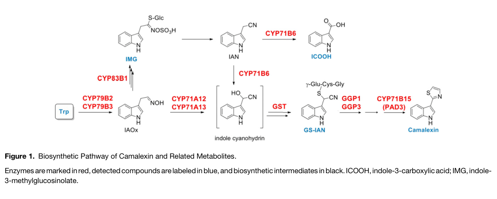

Cytochrome P450 71A13, an N-terminally membrane-anchored heme-thiolate monooxygenase that carries out the second step of camalexin biosynthesis in Arabidopsis. Using NADPH-P450 reductase, it converts indole-3-acetaldoxime (IAOx, made by CYP79B2/B3) to indole-3-acetonitrile (IAN) and, oxidatively, to an indole cyanohydrin/dehydro-IAN electrophile that is captured by glutathione or cysteine en route to camalexin, which CYP71B15 (PAD3) completes. It is the predominant isoform for this step in leaves; its tandem paralog CYP71A12 is partially redundant and mainly channels IAN towards indole-3-carboxylic acid derivatives. CYP71A13 forms a membrane-associated metabolon with CYP79B2, CYP71B15, ATR1 and GSTU4. The gene is strongly induced by pathogens, elicitors and UV-C, and mutants are camalexin-deficient and susceptible to necrotrophic fungi such as Alternaria brassicicola.
| GO Term | Evidence | Action | Reason |
|---|---|---|---|
|
GO:0004497
monooxygenase activity
|
IEA
GO_REF:0000002 |
ACCEPT |
Summary: InterPro P450 mapping to monooxygenase activity. Correct: CYP71A13 is an NADPH/P450-reductase-dependent heme-thiolate monooxygenase whose IAOx turnover is oxidative.
Reason: Klein et al. 2013 showed IAOx turnover by CYP71A13 is strictly NADPH-dependent and proceeds via oxidation (proposed alpha-hydroxy-IAN/dehydro-IAN), so the generic monooxygenase term is supported beyond the domain mapping. The specific activity is better captured by GO:0047720, but this broader IEA is accurate. 18O2 labeling shows oxygen incorporation from O2 into the IAL product, so a genuine monooxygenation occurs. (The independent review kept this row as non-core because the family-level term is less informative than GO:0047720; retained as ACCEPT here since it is accurate and supported beyond the domain mapping.)
Supporting Evidence:
PMID:24151049
With 97% 18O2, both CYP71A13 and CYP71A12 catalyze incorporation of the isotopic label into IAL
PMID:24151049
the formation of both IAN and IAL is strictly dependent on the presence of both CYP71A13 and the cofactor NADPH
PMID:24151049
These data establish that CYP71A13 catalyzes the conversion of IAOx to an electrophile capable of accepting the thiol group of L-cysteine or glutathione
|
|
GO:0005506
iron ion binding
|
IEA
GO_REF:0000002 |
KEEP AS NON CORE |
Summary: Iron ion binding mapped from P450 InterPro signatures; reflects the heme iron.
Reason: Iron is bound only as heme iron (heme-thiolate Cys439); this is a cofactor-level descriptor rather than a function, redundant with heme binding. Not wrong, retained as non-core.
Supporting Evidence:
file:ARATH/CYP71A13/CYP71A13-uniprot.txt
SIMILARITY: Belongs to the cytochrome P450 family.
|
|
GO:0005515
protein binding
|
IPI
PMID:19452453 Proteomic profiling of tandem affinity purified 14-3-3 prote... |
REMOVE |
Summary: CYP71A13 recovered as a putative client in TAP-tag purification of 14-3-3 omega (GRF2, At1g78300) complexes.
Reason: Generic protein binding is uninformative. This is a high-throughput 14-3-3 client screen; no functional consequence for CYP71A13 was tested and no more specific MF is supported. Removal does not imply the interaction is false.
|
|
GO:0005515
protein binding
|
IPI
PMID:31511315 The Formation of a Camalexin Biosynthetic Metabolon. |
REMOVE |
Summary: CYP71A13 interacts with CYP71B15 (PAD3) by co-IP and FRET-FLIM in the camalexin metabolon.
Reason: Generic protein binding is uninformative. The interaction is real and is captured functionally by the catalytic complex (GO:1902494) and camalexin biosynthetic process annotations; no more specific MF is warranted from the interaction alone. Removal does not imply the interaction is false.
Supporting Evidence:
PMID:31511315
we used two independent untargeted coimmunoprecipitation (co-IP) approaches with the biosynthetic enzymes CYP71B15 and CYP71A13 as baits and determined that the camalexin biosynthetic P450 enzymes copurified with these enzymes
|
|
GO:0005515
protein binding
|
IPI
PMID:31511315 The Formation of a Camalexin Biosynthetic Metabolon. |
REMOVE |
Summary: CYP71A13 interacts with GSTU4, recruited to the camalexin metabolon.
Reason: Generic protein binding is uninformative. The interaction is real and is captured functionally by the catalytic complex (GO:1902494) and camalexin biosynthetic process annotations; no more specific MF is warranted from the interaction alone. Removal does not imply the interaction is false.
Supporting Evidence:
PMID:31511315
GSTU4, which is coexpressed with Trp- and camalexin-specific enzymes, is physically recruited to the complex
|
|
GO:0005739
mitochondrion
|
ISM
GO_REF:0000122 |
REMOVE |
Summary: AtSubP sequence-based prediction of mitochondrial localization.
Reason: CYP71A13 has an N-terminal hydrophobic signal anchor (TM 2-20) typical of ER-anchored class II plant P450s that are isolated in microsomes and partner with the ER P450 reductase ATR1; there is no experimental support for mitochondrial targeting. The prediction is contradicted by the protein architecture.
Supporting Evidence:
file:ARATH/CYP71A13/CYP71A13-uniprot.txt
SUBCELLULAR LOCATION: Membrane {ECO:0000305}; Single-pass membrane
PMID:24151049
these membrane-associated enzymes were isolated in the microsomal fraction
|
|
GO:0005788
endoplasmic reticulum lumen
|
IDA
PMID:33831160 The Formation of a Camalexin Biosynthetic Metabolon. |
MODIFY |
Summary: TAIR IDA (2022-02-03) for ER lumen. The cited PMID:33831160 is a deleted duplicate of PMID:31511315 (Mucha et al. 2019), whose evidence is confocal colocalization of CYP71A13 fusions with the ER lumenal marker RFP-HDEL. That shows ER localization but cannot distinguish the lumen from the membrane.
Reason: The ER localization is experimentally sound and is kept. The lumen term is not: CYP71A13 is a signal-anchored class II P450 with a single N-terminal transmembrane helix, and the same paper states that such P450s face the cytosol. Mucha et al. 2019 (PMID:31511315; full text read on PMC, PMC6881122, not cacheable) states "Typically, eukaryotic P450 enzymes are anchored to the membrane of the endoplasmic reticulum (ER) with their catalytic centers facing the cytosolic side" and reports that CYP71A12, CYP71A13 and CYP71B15 "were localized to the ER and showed colocalization with the ER lumenal marker RFP-HDEL" (Supplemental Figure 4). Colocalization with a lumenal marker at confocal resolution identifies the organelle, not the side of the membrane, so endoplasmic reticulum membrane is the correct term. The Mucha full text could not be cached (PMC returns abstract only), so its sentences are quoted here rather than in supported_by.
Proposed replacements:
endoplasmic reticulum membrane
Supporting Evidence:
file:ARATH/CYP71A13/CYP71A13-uniprot.txt
SUBCELLULAR LOCATION: Membrane {ECO:0000305}; Single-pass membrane
PMID:24151049
these membrane-associated enzymes were isolated in the microsomal fraction
file:ARATH/CYP71A13/CYP71A13-deep-research-falcon.md
Fluorescent CYP71A13 fusions showed ER localization when expressed in
file:ARATH/CYP71A13/CYP71A13-deep-research-openscientist.md
where it is reduced by the ER-resident NADPH–cytochrome P450 reductase
|
|
GO:0006952
defense response
|
NAS
PMID:31511315 The Formation of a Camalexin Biosynthetic Metabolon. |
KEEP AS NON CORE |
Summary: ComplexPortal NAS for defense response, from the camalexin metabolon paper.
Reason: Correct but very general; CYP71A13 contributes to defense by producing the phytoalexin camalexin. More specific defense-response-to-fungus annotations exist. Retained as non-core.
Supporting Evidence:
PMID:17573535
Plants carrying cyp71A13 mutations produce greatly reduced amounts of camalexin after infection by Pseudomonas syringae or A. brassicicola and are susceptible to A. brassicicola
PMID:31511315
we used two independent untargeted coimmunoprecipitation (co-IP) approaches with the biosynthetic enzymes CYP71B15 and CYP71A13 as baits and determined that the camalexin biosynthetic P450 enzymes copurified with these enzymes
|
|
GO:0009617
response to bacterium
|
IEP
PMID:17573535 Arabidopsis cytochrome P450 monooxygenase 71A13 catalyzes th... |
KEEP AS NON CORE |
Summary: Expression of CYP71A13 is induced by bacterial infection (P. syringae).
Reason: Transcriptional induction by pathogens is well documented (UniProt INDUCTION), and IEP is the appropriate evidence for a response term. It describes regulation of the gene rather than its function; non-core.
Supporting Evidence:
file:ARATH/CYP71A13/CYP71A13-uniprot.txt
INDUCTION: By Pseudomonas syringae pv. tomato DC3000, Botrytis cinerea
PMID:17573535
Plants carrying cyp71A13 mutations produce greatly reduced amounts of camalexin after infection by Pseudomonas syringae or A. brassicicola and are susceptible to A. brassicicola
|
|
GO:0009617
response to bacterium
|
IMP
PMID:23073694 Metabolic and transcriptomic changes induced in Arabidopsis ... |
KEEP AS NON CORE |
Summary: cyp71A13 mutant tested among camalexin/glucosinolate mutants in rhizobacterium (P. fluorescens SS101)-induced resistance to Pst.
Reason: Mutant phenotype reflects loss of camalexin, which is required for SS101-induced resistance. CYP71A13 acts upstream via phytoalexin synthesis; a non-core, indirect process.
Supporting Evidence:
PMID:23073694
showed that camalexin and glucosinolates are indeed required for the induction of Pst resistance by Pf .SS101
|
|
GO:0009682
induced systemic resistance
|
IBA
GO_REF:0000033 |
MARK AS OVER ANNOTATED |
Summary: PAINT IBA for induced systemic resistance at node PTN005384924, grounded in CYP71A12 and CYP71A13 themselves.
Reason: The node is the recent CYP71A12/CYP71A13 clade and the IBD reflects the experimental IMP for both paralogs (target appearing in its own WITH/FROM is expected), but those rows are themselves marked over-annotated. GO:0009682 is defined as a response to non-pathogenic bacteria conferring systemic resistance "that does not depend upon salicylic acid signaling", whereas the only experimental source (van de Mortel et al. 2012) states that the Pf.SS101-induced resistance to Pst is salicylic acid-dependent and not jasmonic acid/ethylene-dependent. The term therefore misdescribes the observed response. The requirement of camalexin for this resistance is captured by defense response to bacterium.
Propagation Review
Root cause:
SOURCE BAD
Sources checked:
AGI_LocusCode:AT2G30750
· CYP71A12
SOURCE BAD
IMP from van de Mortel et al. 2012; the observed resistance is salicylic acid-dependent, outside the GO:0009682 definition.
AGI_LocusCode:AT2G30770
· CYP71A13
SOURCE BAD
Same paper and same definitional mismatch as CYP71A12.
PANTHER:PTN005384924
· PTN005384924
SOURCE BAD
The node's only experimental grounding is the two IMP rows above.
Supporting Evidence:
PMID:23073694
showed that camalexin and glucosinolates are indeed required for the induction of Pst resistance by Pf .SS101
PMID:23073694
the Pf .SS101 -induced resistance response to Pst is dependent on salicylic acid signaling and not on jasmonic acid and ethylene signaling
|
|
GO:0009682
induced systemic resistance
|
IMP
PMID:23073694 Metabolic and transcriptomic changes induced in Arabidopsis ... |
MARK AS OVER ANNOTATED |
Summary: cyp71A13 mutant impaired in P. fluorescens SS101-induced resistance against Pst.
Reason: The mutant phenotype (via camalexin biosynthesis) is real, but the term does not fit it. GO:0009682 is defined as a response to non-pathogenic bacteria conferring systemic resistance "that does not depend upon salicylic acid signaling", whereas the only experimental source (van de Mortel et al. 2012) states that the Pf.SS101-induced resistance to Pst is salicylic acid-dependent and not jasmonic acid/ethylene-dependent. The term therefore misdescribes the observed response. The same treatment is applied to the identical rows on CYP71A12 and MYB51. The requirement of CYP71A13 for resistance to Pst is captured by defense response to bacterium.
Supporting Evidence:
PMID:23073694
showed that camalexin and glucosinolates are indeed required for the induction of Pst resistance by Pf .SS101
PMID:23073694
the Pf .SS101 -induced resistance response to Pst is dependent on salicylic acid signaling and not on jasmonic acid and ethylene signaling
|
|
GO:0010120
camalexin biosynthetic process
|
IMP
PMID:17573535 Arabidopsis cytochrome P450 monooxygenase 71A13 catalyzes th... |
ACCEPT |
Summary: cyp71A13 mutants are strongly reduced in camalexin and are rescued by IAN feeding.
Reason: Core process. CYP71A13 catalyzes the IAOx conversion step in camalexin biosynthesis; the single mutant retains ~2% camalexin and the cyp71a12 cyp71a13 double knockout is essentially camalexin-free. The enzyme performs a step of the pathway, so involved_in is warranted.
Supporting Evidence:
PMID:17573535
Plants carrying cyp71A13 mutations produce greatly reduced amounts of camalexin after infection by Pseudomonas syringae or A. brassicicola and are susceptible to A. brassicicola
PMID:17573535
Exogenously supplied IAN restored camalexin production in cyp71A13 mutant plants
PMID:25953104
In cyp71a12 cyp71a13 double mutants, only traces of camalexin are synthesized, showing that dehydration of IAOx by CYP71A12 and CYP71A13 is essential for IAN synthesis as a camalexin precursor.
|
|
GO:0010120
camalexin biosynthetic process
|
NAS
PMID:31511315 The Formation of a Camalexin Biosynthetic Metabolon. |
ACCEPT |
Summary: ComplexPortal NAS for camalexin biosynthesis from the metabolon paper.
Reason: Consistent with genetic and biochemical evidence; CYP71A13 is the dominant leaf enzyme for the IAOx step and forms a metabolon with CYP79B2 and CYP71B15.
Supporting Evidence:
PMID:31511315
we used two independent untargeted coimmunoprecipitation (co-IP) approaches with the biosynthetic enzymes CYP71B15 and CYP71A13 as baits and determined that the camalexin biosynthetic P450 enzymes copurified with these enzymes
PMID:31511315
indole-3-cyanohydrin, which is synthesized by CYP71A12 and especially CYP71A13
PMID:24151049
These data establish that CYP71A13 catalyzes the conversion of IAOx to an electrophile capable of accepting the thiol group of L-cysteine or glutathione
|
|
GO:0016020
membrane
|
IEA
GO_REF:0000044 |
ACCEPT |
Summary: Membrane from UniProt subcellular location (single-pass membrane protein).
Reason: Correct but general; CYP71A13 is N-terminally anchored and microsomal. The specific compartment, endoplasmic reticulum membrane (GO:0005789), is captured by the MODIFY of the ER lumen IDA from Mucha et al. 2019, which shows ER localization by confocal colocalization with an ER marker.
Supporting Evidence:
file:ARATH/CYP71A13/CYP71A13-uniprot.txt
SUBCELLULAR LOCATION: Membrane {ECO:0000305}; Single-pass membrane
PMID:24151049
these membrane-associated enzymes were isolated in the microsomal fraction
|
|
GO:0016020
membrane
|
NAS
PMID:31511315 The Formation of a Camalexin Biosynthetic Metabolon. |
ACCEPT |
Summary: ComplexPortal NAS: membrane.
Reason: Correct; the camalexin metabolon is a membrane-associated P450 complex.
Supporting Evidence:
PMID:31511315
we used two independent untargeted coimmunoprecipitation (co-IP) approaches with the biosynthetic enzymes CYP71B15 and CYP71A13 as baits and determined that the camalexin biosynthetic P450 enzymes copurified with these enzymes
|
|
GO:0016491
oxidoreductase activity
|
IBA
GO_REF:0000033 |
ACCEPT |
Summary: PAINT IBA for oxidoreductase activity at a deep CYP71 node.
Reason: Correct, if general, for a P450 monooxygenase whose IAOx turnover is NADPH-dependent and oxidative.
Supporting Evidence:
PMID:24151049
the formation of both IAN and IAL is strictly dependent on the presence of both CYP71A13 and the cofactor NADPH
|
|
GO:0016705
oxidoreductase activity, acting on paired donors, with incorporation or reduction of molecular oxygen
|
IEA
GO_REF:0000002 |
ACCEPT |
Summary: InterPro mapping to paired-donor oxygen-incorporating oxidoreductase activity (P450 class).
Reason: Appropriate class for an NADPH-P450 reductase-dependent P450; the oxidative IAOx turnover supports it.
Supporting Evidence:
PMID:24151049
the formation of both IAN and IAL is strictly dependent on the presence of both CYP71A13 and the cofactor NADPH
|
|
GO:0020037
heme binding
|
IEA
GO_REF:0000002 |
KEEP AS NON CORE |
Summary: Heme binding from P450 InterPro signatures.
Reason: Correct cofactor binding (heme-thiolate Cys439) shared by all P450s; descriptive of the fold rather than the specific function.
Supporting Evidence:
file:ARATH/CYP71A13/CYP71A13-uniprot.txt
SIMILARITY: Belongs to the cytochrome P450 family.
|
|
GO:0042742
defense response to bacterium
|
IMP
PMID:17573535 Arabidopsis cytochrome P450 monooxygenase 71A13 catalyzes th... |
KEEP AS NON CORE |
Summary: cyp71A13 mutant phenotype in defense against bacteria.
Reason: cyp71A13 mutants make little camalexin after P. syringae infection; the defense contribution is indirect (via the phytoalexin) and the clearest pathogen phenotype is against fungi. Rajniak et al. 2015 independently reported that cyp71A13 mutants are more susceptible to P. syringae. Retained as non-core, acts upstream.
Supporting Evidence:
PMID:17573535
Plants carrying cyp71A13 mutations produce greatly reduced amounts of camalexin after infection by Pseudomonas syringae or A. brassicicola and are susceptible to A. brassicicola
PMID:26352477
Notably, the adult leaves and seedlings of the camalexin pathway mutants cyp71A13 and pad3 are also more susceptible to Pst infection compared to WT
|
|
GO:0047720
indoleacetaldoxime dehydratase activity
|
IDA
PMID:17573535 Arabidopsis cytochrome P450 monooxygenase 71A13 catalyzes th... |
ACCEPT |
Summary: Recombinant CYP71A13 converts IAOx to IAN (EC 4.8.1.3).
Reason: Core MF, directly demonstrated by Nafisi et al. 2007 and reproduced by Klein et al. 2013 and Muller et al. 2015. Note the reaction is NADPH-dependent and mechanistically oxidative (cyanohydrin/dehydro-IAN intermediates that are captured by Cys/GSH), so this dehydratase term describes the net IAN-forming outcome; no GO term yet describes the oxidative coupling-competent step.
Supporting Evidence:
PMID:17573535
CYP71A13 expressed in Escherichia coli converted IAOx to indole-3-acetonitrile (IAN)
PMID:24151049
the formation of both IAN and IAL is strictly dependent on the presence of both CYP71A13 and the cofactor NADPH
PMID:24151049
These data establish that CYP71A13 catalyzes the conversion of IAOx to an electrophile capable of accepting the thiol group of L-cysteine or glutathione
|
|
GO:0047720
indoleacetaldoxime dehydratase activity
|
IEA
GO_REF:0000120 |
ACCEPT |
Summary: Rhea/EC-based IEA (RHEA:23156, EC 4.8.1.3) for indoleacetaldoxime dehydratase activity.
Reason: Consistent with the experimental IDA for the same activity.
Supporting Evidence:
PMID:17573535
CYP71A13 expressed in Escherichia coli converted IAOx to indole-3-acetonitrile (IAN)
|
|
GO:0050832
defense response to fungus
|
IMP
PMID:17573535 Arabidopsis cytochrome P450 monooxygenase 71A13 catalyzes th... |
ACCEPT |
Summary: cyp71A13 mutants are susceptible to Alternaria brassicicola.
Reason: Strong and reproducible: susceptibility to A. brassicicola, loss of UV-C-induced resistance to B. cinerea, and immunity defects with P. cucumerina/C. tropicale. The enzyme acts upstream of fungal defense by producing camalexin; this is the main physiological role of the gene.
Supporting Evidence:
PMID:17573535
Plants carrying cyp71A13 mutations produce greatly reduced amounts of camalexin after infection by Pseudomonas syringae or A. brassicicola and are susceptible to A. brassicicola
PMID:19154205
UV-C-induced resistance was not seen in the camalexin-deficient mutants cyp79B2/B3, cyp71A13, pad3 or pad2
PMID:31411742
revealed cyp71A12-, cyp71A13- and cyp82C2-associated defects associated with Arabidopsis immunity
|
|
GO:1902494
catalytic complex
|
NAS
PMID:31511315 The Formation of a Camalexin Biosynthetic Metabolon. |
KEEP AS NON CORE |
Summary: ComplexPortal NAS: part of the camalexin biosynthetic metabolon (catalytic complex).
Reason: Mucha et al. 2019 showed by co-IP and FRET-FLIM that CYP71A13 associates with CYP79B2, CYP71B15, ATR1 and GSTU4, and allosterically increases CYP79B2 substrate affinity. The association is real and catalytic complex is the only available CC term, but the assembly is a dynamic, pathogen-induced metabolon rather than a stable complex of fixed composition, and CYP71A13 is catalytically active on its own with P450 reductase (Klein et al. 2013). Kept as non-core, consistent with the CYP71A12, CYP71B15 and CYP79B2 reviews.
Supporting Evidence:
PMID:31511315
we used two independent untargeted coimmunoprecipitation (co-IP) approaches with the biosynthetic enzymes CYP71B15 and CYP71A13 as baits and determined that the camalexin biosynthetic P450 enzymes copurified with these enzymes
PMID:31511315
GSTU4, which is coexpressed with Trp- and camalexin-specific enzymes, is physically recruited to the complex
PMID:31511315
We detected increased substrate affinity of CYP79B2 in the presence of CYP71A13
PMID:24151049
the formation of both IAN and IAL is strictly dependent on the presence of both CYP71A13 and the cofactor NADPH
|
Q: Should GO add a molecular function term for the NADPH-dependent oxidative conversion of indole-3-acetaldoxime to the thiol-reactive cyanohydrin/dehydro-IAN intermediate, distinct from EC 4.8.1.3 dehydratase activity?
Q: Should TAIR revise the ER lumen (GO:0005788) IDA rows from Mucha et al. 2019 (cited under the deleted duplicate PMID:33831160) on CYP71A12, CYP71A13 and CYP71B15 to endoplasmic reticulum membrane, given that the evidence is colocalization with a lumenal marker and the paper itself describes these P450s as membrane-anchored and cytosol-facing?
Q: How much does CYP71A12 compensate for CYP71A13 in camalexin synthesis in different tissues, given that CYP71A12 favours the indole-3-carbaldehyde/indole-3-carboxylic acid branch?
Q: Is conjugation of the CYP71A13 product to glutathione enzyme-catalyzed in planta (GSTF6 or another GST), given that metabolon-recruited GSTU4 antagonizes camalexin accumulation?
Q: Does the vasculature-restricted induction of CYP71A13 versus epidermal induction of CYP71A12 at fungal infection sites (Tang et al. 2023) reflect distinct metabolic outputs (camalexin vs ICOOH derivatives) per cell type?
Experiment: Co-localize CYP71A13-FP with ER markers and test protease protection / glycosylation-site topology to resolve the ER lumen annotation.
Hypothesis: CYP71A13 is ER-membrane anchored with a cytosol-facing catalytic domain.
Type: subcellular localization and topology
Experiment: Complement cyp71a12 cyp71a13 double mutants with CYP71A13 driven by vasculature- versus epidermis-specific promoters and score camalexin and C. higginsianum colonization.
Hypothesis: Cell-type-specific CYP71A13 expression in vasculature is required for full camalexin-mediated resistance to Colletotrichum.
Type: cell-type-specific complementation
Experiment: Kinetic comparison of purified CYP71A13 and CYP71A12 with IAOx and IAN, with and without glutathione transferases, to define how product partitioning between Cys/GS-IAN and indole-3-carbaldehyde is controlled.
Hypothesis: Product partitioning between Cys/GS-IAN and indole-3-carbaldehyde differs intrinsically between CYP71A13 and CYP71A12.
Type: in vitro enzyme kinetics
The research report should be a detailed narrative explaining the function, biological processes, and localization of the gene product. Citations should be given for all claims.
You should prioritize authoritative reviews and primary scientific literature when conducting research. You can supplement
this with annotations you find in gene/protein databases, but these can be outdated or inaccurate.
We are specifically interested in the primary function of the gene - for enzymes, what reaction is catalyzed, and what is the substrate specificity? For transporters, what is the substrate? For structural proteins or adapters, what is the broader structural role? For signaling molecules, what is the role in the pathway.
We are interested in where in or outside the cell the gene product carries out its function.
We are also interested in the signaling or biochemical pathways in which the gene functions. We are less interested in broad pleiotropic effects, except where these elucidate the precise role.
Include evidence where possible. We are interested in both experimental evidence as well as inference from structure, evolution, or bioinformatic analysis. Precise studies should be prioritized over high-throughput, where available.
Identity verified. The target is Arabidopsis thaliana CYP71A13 (locus At2g30770, UniProt O49342), annotated as cytochrome P450 71A13/indoleacetaldoxime dehydratase (EC 4.8.1.3). The accession, locus and EC assignment are supplied in the question’s UniProt record; independent Arabidopsis literature confirms that CYP71A13 is a CYP71-family P450 acting in camalexin synthesis. The specified Cyt_P450/PF00067 and related domain annotations agree with that experimentally established family assignment. CYP71A12 and CYP71A27 are separate Arabidopsis genes, not alternative names for this protein. (bak2011cytochromesp450 pages 11-12, pastorczyk2020theroleof pages 1-2, koprivova2019rootspecificcamalexinbiosynthesis pages 3-4)
CYP71A13 diverts indole-3-acetaldoxime (IAOx), a tryptophan-derived branch-point metabolite, toward the sulfur-containing antimicrobial phytoalexin camalexin. Its established annotated reaction is IAOx → indole-3-acetonitrile (IAN) + H₂O. The original biochemical assignment is Nafisi et al., “Arabidopsis Cytochrome P450 Monooxygenase 71A13 Catalyzes the Conversion of Indole-3-Acetaldoxime in Camalexin Synthesis,” The Plant Cell (June 2007), doi:10.1105/tpc.107.051383; an authoritative P450 review independently describes the IAOx-to-IAN activity. The original article was identifiable but its full text was not available in this retrieval, so the detailed original assay conditions cannot be independently reproduced here. (bak2011cytochromesp450 pages 11-12)
The dehydration annotation does not capture the entire current pathway model. Subsequent work implicates CYP71A13, particularly strongly relative to CYP71A12, in production of an activated IAN-derived intermediate described as indole-3-cyanohydrin. Glutathione conjugation of that intermediate supplies GS-IAN, which is processed to cysteine-IAN [Cys(IAN)]; the downstream P450 PAD3/CYP71B15, rather than CYP71A13, then converts Cys(IAN) toward camalexin. IAN can therefore be named as a demonstrated product/intermediate without asserting that a pool of freely released IAN must precede every instance of cyanohydrin formation. This distinction is illustrated in Mucha et al.’s pathway figure. (mucha2019theformationof pages 1-2, mucha2019theformationof pages 2-3, mucha2019theformationof media e594cac2, bottcher2009themultifunctionalenzyme pages 1-2)
The experimentally supported physiological substrate is IAOx; the available evidence does not justify assigning CYP71A13 a similarly well-established substrate panel or calling it the final camalexin-forming enzyme. In yeast microsomes, coexpression of CYP79B2, CYP71A13 and the reductase ATR1 shifted tryptophan-derived products toward IAN. The apparent Kₘ for CYP79B2 acting on tryptophan changed from 17.5 ± 1.9 to 6.9 ± 0.9 µM with CYP71A13 present—evidence consistent with functional coupling, not a measurement of CYP71A13’s own Kₘ for IAOx. Mucha et al., The Plant Cell (2019), doi:10.1105/tpc.19.00403. (mucha2019theformationof pages 5-6, mucha2019theformationof pages 7-8)
The following evidence map separates reactions performed by CYP71A13 from adjacent pathway steps and qualified inferences. (bak2011cytochromesp450 pages 11-12, mucha2019theformationof pages 1-2, mucha2019theformationof pages 2-3)
| Reaction / biological step | Enzyme(s) | Evidence strength | Important caveat / interpretation |
|---|---|---|---|
| Upstream precursor formation: L-tryptophan → indole-3-acetaldoxime (IAOx) | CYP79B2, CYP79B3 | Strong biochemical and genetic support. IAOx is the shared branch-point precursor for camalexin, indole glucosinolates, indole-carbonyl nitriles and related metabolites. The Formation of a Camalexin Biosynthetic Metabolon (2019), DOI: 10.1105/tpc.19.00403 (mucha2019theformationof pages 1-2, mucha2019theformationof pages 2-3) | This is upstream of CYP71A13 and is not specific to camalexin. In healthy tissue, much IAOx instead enters indole-glucosinolate biosynthesis through CYP83B1. |
| Principal annotated reaction: IAOx → indole-3-acetonitrile (IAN); subsequent oxidative “activation” toward indole-3-cyanohydrin contributes to camalexin synthesis | CYP71A13; partially redundant CYP71A12 | Strong support for IAOx-to-IAN conversion; substantial pathway evidence for further activation. Recombinant/heterologous and mutant evidence established the dehydration reaction, while later work places CYP71A13—especially strongly—also in indole-3-cyanohydrin formation. Cytochromes P450 (2011), DOI: 10.1199/tab.0144; Camalexin Biosynthetic Metabolon (2019), DOI above (bak2011cytochromesp450 pages 11-12, mucha2019theformationof pages 1-2, mucha2019theformationof pages 2-3, mucha2019theformationof media e594cac2) | IAN is a detected and important pathway intermediate, but current models should not imply that freely diffusible IAN is the sole obligatory immediate intermediate in every catalytic context. Reactive intermediates may be metabolically channeled within an ER-associated complex. |
| Sulfur incorporation: indole-3-cyanohydrin/reactive IAN-derived intermediate + glutathione → GS-IAN | One or more glutathione transferases; GSTU4 physically associates with CYP71A13 and other pathway enzymes | Strong evidence for glutathione conjugation; weak evidence for a uniquely required GST isoform. A yeast survey found many Arabidopsis GSTs capable of supporting GS-IAN formation. Camalexin Biosynthetic Metabolon (2019), DOI above (mucha2019theformationof pages 6-7, mucha2019theformationof pages 7-8) | GSTU4 interaction is not proof that GSTU4 is the required biosynthetic GST. In fact, gstu4 knockout plants accumulated more camalexin, whereas GSTU4 overexpression reduced it, indicating a competing or regulatory role rather than an indispensable catalytic role (mucha2019theformationof pages 8-9). |
| Conjugate processing and final synthesis: GS-IAN → Cys(IAN) → dihydrocamalexic acid/camalexin | GGP1 participates in shortening GS-IAN to Cys(IAN); PAD3/CYP71B15 performs the terminal multifunctional P450 reactions | Strong biochemical and genetic support. pad3 mutants are camalexin deficient and accumulate precursors; heterologously expressed CYP71B15 converts Cys(IAN) toward camalexin. The Multifunctional Enzyme CYP71B15… (2009), DOI: 10.1105/tpc.109.066670 (bottcher2009themultifunctionalenzyme pages 1-2, bak2011cytochromesp450 pages 12-13, mucha2019theformationof pages 1-2) |
CYP71A13 does not itself catalyze the final conversion to camalexin; that downstream role belongs to PAD3/CYP71B15. |
| Subcellular site and electron supply: ER-associated camalexin metabolon; CYP71A13 receives reducing equivalents through a P450 reductase | CYP71A13, ATR1, CYP79B2, CYP71A12, CYP71B15 and associated soluble enzymes | Direct localization and interaction evidence. Fluorescent CYP71A13 fusions localized to the ER in Nicotiana benthamiana; targeted co-IP repeatedly detected CYP71A13–ATR1 and CYP71A13–CYP71B15 associations, while Arabidopsis microsomal co-IP supported the native metabolon. Camalexin Biosynthetic Metabolon (2019), DOI above (mucha2019theformationof pages 5-5, mucha2019theformationof pages 5-6, mucha2019theformationof pages 6-7, mucha2019theformationof pages 3-4) | Direct CYP71A13 localization microscopy was performed mainly in a heterologous leaf system; native Arabidopsis support comes principally from microsomal interaction/proteomic evidence. The reported apparent Kₘ shift—from 17.5 ± 1.9 to 6.9 ± 0.9—belongs to CYP79B2 for tryptophan, measured without versus with CYP71A13; it is not a CYP71A13 Kₘ (mucha2019theformationof pages 5-6). |
| Paralog specialization and tissue context | CYP71A13 versus CYP71A12; distinct CYP71A27 in roots | Strong mutant/metabolomic support for overlapping but biased functions. CYP71A13 is the principal contributor to induced leaf camalexin synthesis; CYP71A12 contributes more prominently to pathogen-induced ICA/ICN-related metabolism. Both can contribute to camalexin, particularly in roots. The Role of CYP71A12… (2020), DOI: 10.1111/nph.16118; Root-specific Camalexin Biosynthesis… (2019), DOI: 10.1073/pnas.1818604116 (pastorczyk2020theroleof pages 1-2, pastorczyk2020theroleof pages 6-7, koprivova2019rootspecificcamalexinbiosynthesis pages 3-4) | CYP71A12 and CYP71A13 are close tandem paralogs and can compensate transcriptionally, so single-mutant phenotypes depend on tissue and elicitor. CYP71A27 is a separate, root-biased gene and must not be conflated with the target CYP71A13/At2g30770. |
Table: Evidence-weighted map of Arabidopsis CYP71A13 function, pathway context, localization and paralog distinctions. Caveats separate directly demonstrated reactions from metabolon models and prevent misattribution of CYP79B2 kinetics to CYP71A13.
CYP71A13 functions at the endoplasmic reticulum (ER), in an ER-associated camalexin-biosynthetic enzyme assembly. Fluorescent CYP71A13 fusions showed ER localization when expressed in Nicotiana benthamiana leaves; microscopy distinguished the ER-localized P450 from cytosolic GST proteins. This is direct localization of the Arabidopsis protein in a heterologous plant, not a claim that the same imaging experiment mapped native CYP71A13 in every Arabidopsis tissue. In Arabidopsis leaves, microsomal co-immunoprecipitation after challenge independently supports its association with an ER-membrane pathway complex. The predicted positioning of its catalytic domain on the cytosolic face follows the usual topology of eukaryotic ER P450s and is less directly demonstrated for this particular protein than ER association itself. (mucha2019theformationof pages 1-2, mucha2019theformationof pages 6-7, mucha2019theformationof pages 3-4, mucha2019theformationof pages 5-5)
Targeted co-immunoprecipitation detected CYP71A13 with ATR1, a P450 reductase, and with downstream CYP71B15/PAD3; co-immunoprecipitation and fluorescence-lifetime/FRET experiments also support contacts with other pathway proteins. In infected Arabidopsis leaf material, CYP71A13 was enriched 109-fold in a CYP71B15 pull-down relative to controls (P = 0.00014). Together, physical association and the yeast product-shift experiment support metabolic channeling of reactive intermediates, although they do not establish an immutable complex or prove that all intermediate molecules remain bound throughout synthesis. (mucha2019theformationof pages 5-6, mucha2019theformationof pages 3-4, mucha2019theformationof pages 8-9)
CYP71A13 is not an extracellular enzyme: its characterized biosynthetic site is ER-associated. Antimicrobial camalexin can subsequently act beyond the producing cell; that disposition must not be confused with the localization of the CYP71A13 protein. GSTU4’s physical recruitment to the complex likewise does not establish that it is an indispensable GS-IAN-producing enzyme: 41 Arabidopsis GSTs supported product formation in a heterologous screen, while gstu4 knockouts generally had more, and GSTU4-overexpressing plants less, induced camalexin. (mucha2019theformationof pages 6-7, mucha2019theformationof pages 7-8, mucha2019theformationof pages 8-9)
CYP71A13 supplies an inducible biochemical branch of pathogen defense, rather than functioning as a pathogen receptor or transcription factor. cyp71a13 mutants make greatly reduced camalexin after Pseudomonas syringae or Alternaria brassicicola challenge and show increased susceptibility to A. brassicicola. A separate leaf study associated cyp71a13 loss with low Botrytis cinerea-induced camalexin and larger lesions. These observations support a contribution to resistance, but the size of the phenotype depends on tissue, challenge and compensation by other tryptophan-derived defenses. Bak et al., The Arabidopsis Book (2011), doi:10.1199/tab.0144; Koprivova et al., PNAS (July 2019), doi:10.1073/pnas.1818604116. (bak2011cytochromesp450 pages 12-13, koprivova2019rootspecificcamalexinbiosynthesis pages 3-4)
Paralog specificity matters for annotation. CYP71A12 and CYP71A13 are closely related tandem genes, reported to have approximately 89% amino-acid similarity. Both can contribute to camalexin, but in the infection contexts examined CYP71A13 is the more important contributor in leaves, whereas CYP71A12 contributes prominently to root camalexin and to pathogen-induced indole-3-carboxylic-acid (ICA) and indole-carbonyl-nitrile-related metabolism. In infected leaves, disrupting either CYP71A gene increased expression of the other; accordingly, a single-gene mutant is not a clean measure of exclusive substrate specificity. Pastorczyk et al., New Phytologist (accepted August 2019, published in volume 225, 2020), doi:10.1111/nph.16118. The distinct root-associated CYP71A27 must not be assigned CYP71A13’s direct biochemical reaction simply because it influences camalexin phenotypes. (pastorczyk2020theroleof pages 1-2, pastorczyk2020theroleof pages 6-7, koprivova2019rootspecificcamalexinbiosynthesis pages 3-4)
IAOx is supplied upstream by CYP79B2/CYP79B3; in healthy tissues, the competing enzyme CYP83B1 instead directs much of it toward indole glucosinolates. Pathogens and elicitors induce the CYP71A13-associated defense branch. An authoritative August 2024 review discusses microbial pattern recognition, MAP kinase and WRKY-linked control of camalexin-pathway gene expression, including CYP71A13: Hu, Teng and Li, Current Opinion in Biotechnology, doi:10.1016/j.copbio.2024.103148. Such signaling regulates production of the enzyme; it does not make CYP71A13 itself a signaling protein. Regulator-to-gene relationships should be interpreted by their underlying assays rather than treating a review schematic as proof of direct binding to the CYP71A13 promoter. (hu2024unleashingplantsynthetic pages 3-4, mucha2019theformationof pages 2-3, lin2024abaregulatedjaz1proteins pages 1-3, somssich2025gunsinrosettes pages 5-6)
A 2024 Arabidopsis immune-priming experiment found that pretreatment with the synthetic strigolactone analogue rac-GR24 reduced B. cinerea leaf-lesion area from 27.3 ± 2.35 to 20.1 ± 3.55 mm² (26%), while pathogen-induced camalexin rose 36% at 18 hours and 44% at 24 hours relative to untreated controls. Priming depended on downstream PAD3 and ethylene signaling in the tested mutants. Importantly, this experiment assayed PAD3 and camalexin, not a CYP71A13-specific loss-of-function or enzymatic response: it demonstrates an application of the pathway, not a newly established reaction for CYP71A13. Fujita et al., Journal of Pesticide Science (published online 9 August 2024), doi:10.1584/jpestics.D24-019. (fujita2024enhanceddiseaseresistance pages 4-5, fujita2024enhanceddiseaseresistance pages 5-6, fujita2024enhanceddiseaseresistance pages 1-2)
The current real-world implementation is primarily experimental: CYP71A13 mutants, tagged P450s and reconstituted yeast microsomes are used to dissect pathogen resistance, substrate flow and potential metabolic engineering. The 2024 review proposes manipulating defense elicitation to improve specialized-metabolite production; the retrieved evidence does not demonstrate a deployed CYP71A13-engineered crop or justify promising field-scale disease control from this gene alone. Root experiments additionally show why deployment cannot simply extrapolate from infected leaves: CYP71A12 and the separate CYP71A27 contribute differently across organs and microbial interactions. (mucha2019theformationof pages 5-6, hu2024unleashingplantsynthetic pages 3-4, koprivova2019rootspecificcamalexinbiosynthesis pages 3-4, fujita2024enhanceddiseaseresistance pages 5-6)
Annotation conclusion. The highest-confidence assignment for UniProt O49342 is ER-associated, P450-dependent conversion of IAOx into the IAN/activated-cyanohydrin arm of tryptophan-derived camalexin biosynthesis. The IAOx→IAN dehydratase reaction is established; the detailed partitioning between released IAN and further CYP71A13-mediated activation is more context-dependent. CYP71A13 is neither the downstream PAD3 enzyme nor the CYP71A12-dominated ICA-pathway enzyme. (bak2011cytochromesp450 pages 11-12, mucha2019theformationof pages 1-2, pastorczyk2020theroleof pages 1-2, mucha2019theformationof pages 2-3, mucha2019theformationof media e594cac2)
References
(bak2011cytochromesp450 pages 11-12): Søren Bak, Fred Beisson, Gerard Bishop, Björn Hamberger, René Höfer, Suzanne Paquette, and Danièle Werck-Reichhart. Cytochromes p450. The Arabidopsis Book, 2011:e0144, Jan 2011. URL: https://doi.org/10.1199/tab.0144, doi:10.1199/tab.0144. This article has 540 citations and is from a peer-reviewed journal.
(pastorczyk2020theroleof pages 1-2): Marta Pastorczyk, Ayumi Kosaka, Mariola Piślewska‐Bednarek, Gemma López, Henning Frerigmann, Karolina Kułak, Erich Glawischnig, Antonio Molina, Yoshitaka Takano, and Paweł Bednarek. The role of cyp71a12 monooxygenase in pathogen-triggered tryptophan metabolism and arabidopsis immunity. The New phytologist, 225:400-412, Sep 2020. URL: https://doi.org/10.1111/nph.16118, doi:10.1111/nph.16118. This article has 93 citations.
(koprivova2019rootspecificcamalexinbiosynthesis pages 3-4): Anna Koprivova, Stefan Schuck, Richard P. Jacoby, Irene Klinkhammer, Bastian Welter, Lisa Leson, Anna Martyn, Julia Nauen, Niklas Grabenhorst, Jan F. Mandelkow, Alga Zuccaro, Jürgen Zeier, and Stanislav Kopriva. Root-specific camalexin biosynthesis controls the plant growth-promoting effects of multiple bacterial strains. Proceedings of the National Academy of Sciences of the United States of America, 116:15735-15744, Jul 2019. URL: https://doi.org/10.1073/pnas.1818604116, doi:10.1073/pnas.1818604116. This article has 263 citations and is from a highest quality peer-reviewed journal.
(mucha2019theformationof pages 1-2): Stefanie Mucha, Stephanie Heinzlmeir, Verena Kriechbaumer, Benjamin Strickland, Charlotte Kirchhelle, Manisha Choudhary, Natalie Kowalski, Ruth Eichmann, Ralph Hueckelhoven, Erwin Grill, Bernhard Kuster, and Erich Glawischnig. The formation of a camalexin biosynthetic metabolon. Plant Cell, 31:2697-2710, Sep 2019. URL: https://doi.org/10.1105/tpc.19.00403, doi:10.1105/tpc.19.00403. This article has 105 citations and is from a highest quality peer-reviewed journal.
(mucha2019theformationof pages 2-3): Stefanie Mucha, Stephanie Heinzlmeir, Verena Kriechbaumer, Benjamin Strickland, Charlotte Kirchhelle, Manisha Choudhary, Natalie Kowalski, Ruth Eichmann, Ralph Hueckelhoven, Erwin Grill, Bernhard Kuster, and Erich Glawischnig. The formation of a camalexin biosynthetic metabolon. Plant Cell, 31:2697-2710, Sep 2019. URL: https://doi.org/10.1105/tpc.19.00403, doi:10.1105/tpc.19.00403. This article has 105 citations and is from a highest quality peer-reviewed journal.
(mucha2019theformationof media e594cac2): Stefanie Mucha, Stephanie Heinzlmeir, Verena Kriechbaumer, Benjamin Strickland, Charlotte Kirchhelle, Manisha Choudhary, Natalie Kowalski, Ruth Eichmann, Ralph Hueckelhoven, Erwin Grill, Bernhard Kuster, and Erich Glawischnig. The formation of a camalexin biosynthetic metabolon. Plant Cell, 31:2697-2710, Sep 2019. URL: https://doi.org/10.1105/tpc.19.00403, doi:10.1105/tpc.19.00403. This article has 105 citations and is from a highest quality peer-reviewed journal.
(bottcher2009themultifunctionalenzyme pages 1-2): C. Böttcher, L. Westphal, Constanze Schmotz, Elke Prade, D. Scheel, and E. Glawischnig. The multifunctional enzyme cyp71b15 (phytoalexin deficient3) converts cysteine-indole-3-acetonitrile to camalexin in the indole-3-acetonitrile metabolic network of arabidopsis thaliana[w][oa]. The Plant Cell Online, 21:1830-1845, Jun 2009. URL: https://doi.org/10.1105/tpc.109.066670, doi:10.1105/tpc.109.066670. This article has 279 citations.
(mucha2019theformationof pages 5-6): Stefanie Mucha, Stephanie Heinzlmeir, Verena Kriechbaumer, Benjamin Strickland, Charlotte Kirchhelle, Manisha Choudhary, Natalie Kowalski, Ruth Eichmann, Ralph Hueckelhoven, Erwin Grill, Bernhard Kuster, and Erich Glawischnig. The formation of a camalexin biosynthetic metabolon. Plant Cell, 31:2697-2710, Sep 2019. URL: https://doi.org/10.1105/tpc.19.00403, doi:10.1105/tpc.19.00403. This article has 105 citations and is from a highest quality peer-reviewed journal.
(mucha2019theformationof pages 7-8): Stefanie Mucha, Stephanie Heinzlmeir, Verena Kriechbaumer, Benjamin Strickland, Charlotte Kirchhelle, Manisha Choudhary, Natalie Kowalski, Ruth Eichmann, Ralph Hueckelhoven, Erwin Grill, Bernhard Kuster, and Erich Glawischnig. The formation of a camalexin biosynthetic metabolon. Plant Cell, 31:2697-2710, Sep 2019. URL: https://doi.org/10.1105/tpc.19.00403, doi:10.1105/tpc.19.00403. This article has 105 citations and is from a highest quality peer-reviewed journal.
(mucha2019theformationof pages 6-7): Stefanie Mucha, Stephanie Heinzlmeir, Verena Kriechbaumer, Benjamin Strickland, Charlotte Kirchhelle, Manisha Choudhary, Natalie Kowalski, Ruth Eichmann, Ralph Hueckelhoven, Erwin Grill, Bernhard Kuster, and Erich Glawischnig. The formation of a camalexin biosynthetic metabolon. Plant Cell, 31:2697-2710, Sep 2019. URL: https://doi.org/10.1105/tpc.19.00403, doi:10.1105/tpc.19.00403. This article has 105 citations and is from a highest quality peer-reviewed journal.
(mucha2019theformationof pages 8-9): Stefanie Mucha, Stephanie Heinzlmeir, Verena Kriechbaumer, Benjamin Strickland, Charlotte Kirchhelle, Manisha Choudhary, Natalie Kowalski, Ruth Eichmann, Ralph Hueckelhoven, Erwin Grill, Bernhard Kuster, and Erich Glawischnig. The formation of a camalexin biosynthetic metabolon. Plant Cell, 31:2697-2710, Sep 2019. URL: https://doi.org/10.1105/tpc.19.00403, doi:10.1105/tpc.19.00403. This article has 105 citations and is from a highest quality peer-reviewed journal.
(bak2011cytochromesp450 pages 12-13): Søren Bak, Fred Beisson, Gerard Bishop, Björn Hamberger, René Höfer, Suzanne Paquette, and Danièle Werck-Reichhart. Cytochromes p450. The Arabidopsis Book, 2011:e0144, Jan 2011. URL: https://doi.org/10.1199/tab.0144, doi:10.1199/tab.0144. This article has 540 citations and is from a peer-reviewed journal.
(mucha2019theformationof pages 5-5): Stefanie Mucha, Stephanie Heinzlmeir, Verena Kriechbaumer, Benjamin Strickland, Charlotte Kirchhelle, Manisha Choudhary, Natalie Kowalski, Ruth Eichmann, Ralph Hueckelhoven, Erwin Grill, Bernhard Kuster, and Erich Glawischnig. The formation of a camalexin biosynthetic metabolon. Plant Cell, 31:2697-2710, Sep 2019. URL: https://doi.org/10.1105/tpc.19.00403, doi:10.1105/tpc.19.00403. This article has 105 citations and is from a highest quality peer-reviewed journal.
(mucha2019theformationof pages 3-4): Stefanie Mucha, Stephanie Heinzlmeir, Verena Kriechbaumer, Benjamin Strickland, Charlotte Kirchhelle, Manisha Choudhary, Natalie Kowalski, Ruth Eichmann, Ralph Hueckelhoven, Erwin Grill, Bernhard Kuster, and Erich Glawischnig. The formation of a camalexin biosynthetic metabolon. Plant Cell, 31:2697-2710, Sep 2019. URL: https://doi.org/10.1105/tpc.19.00403, doi:10.1105/tpc.19.00403. This article has 105 citations and is from a highest quality peer-reviewed journal.
(pastorczyk2020theroleof pages 6-7): Marta Pastorczyk, Ayumi Kosaka, Mariola Piślewska‐Bednarek, Gemma López, Henning Frerigmann, Karolina Kułak, Erich Glawischnig, Antonio Molina, Yoshitaka Takano, and Paweł Bednarek. The role of cyp71a12 monooxygenase in pathogen-triggered tryptophan metabolism and arabidopsis immunity. The New phytologist, 225:400-412, Sep 2020. URL: https://doi.org/10.1111/nph.16118, doi:10.1111/nph.16118. This article has 93 citations.
(hu2024unleashingplantsynthetic pages 3-4): Rongbin Hu, Xiaoxuan Teng, and Yanran Li. Unleashing plant synthetic capacity: navigating regulatory mechanisms for enhanced bioproduction and secondary metabolite discovery. Current Opinion in Biotechnology, 88:103148, Aug 2024. URL: https://doi.org/10.1016/j.copbio.2024.103148, doi:10.1016/j.copbio.2024.103148. This article has 10 citations and is from a peer-reviewed journal.
(lin2024abaregulatedjaz1proteins pages 1-3): Jie Lin, Ivan Monsalvo, Md Asraful Jahan, Melissa Ly, Dasol Wi, Izabella Martirosyan, Israt Jahan, and Nikola Kovinich. Aba-regulated jaz1 proteins bind nac42 transcription factors to suppress the activation of phytoalexin biosynthesis in plants. bioRxiv, Sep 2024. URL: https://doi.org/10.1101/2024.09.26.615281, doi:10.1101/2024.09.26.615281. This article has 1 citations.
(somssich2025gunsinrosettes pages 5-6): Marc Somssich, Daniel J Kliebenstein, and Tonni Grube Andersen. Guns in rosettes: the arabidopsis chemical weapons arsenal. Plant Physiology, Sep 2025. URL: https://doi.org/10.1093/plphys/kiaf411, doi:10.1093/plphys/kiaf411. This article has 4 citations and is from a highest quality peer-reviewed journal.
(fujita2024enhanceddiseaseresistance pages 4-5): Moeka Fujita, Tomoya Tanaka, Miyuki Kusajima, Kengo Inoshima, Futo Narita, Hidemitsu Nakamura, Tadao Asami, Akiko Maruyama-Nakashita, and Hideo Nakashita. Enhanced disease resistance against botrytis cinerea by strigolactone-mediated immune priming in arabidopsis thaliana. Journal of Pesticide Science, 49:186-194, Aug 2024. URL: https://doi.org/10.1584/jpestics.d24-019, doi:10.1584/jpestics.d24-019. This article has 10 citations and is from a peer-reviewed journal.
(fujita2024enhanceddiseaseresistance pages 5-6): Moeka Fujita, Tomoya Tanaka, Miyuki Kusajima, Kengo Inoshima, Futo Narita, Hidemitsu Nakamura, Tadao Asami, Akiko Maruyama-Nakashita, and Hideo Nakashita. Enhanced disease resistance against botrytis cinerea by strigolactone-mediated immune priming in arabidopsis thaliana. Journal of Pesticide Science, 49:186-194, Aug 2024. URL: https://doi.org/10.1584/jpestics.d24-019, doi:10.1584/jpestics.d24-019. This article has 10 citations and is from a peer-reviewed journal.
(fujita2024enhanceddiseaseresistance pages 1-2): Moeka Fujita, Tomoya Tanaka, Miyuki Kusajima, Kengo Inoshima, Futo Narita, Hidemitsu Nakamura, Tadao Asami, Akiko Maruyama-Nakashita, and Hideo Nakashita. Enhanced disease resistance against botrytis cinerea by strigolactone-mediated immune priming in arabidopsis thaliana. Journal of Pesticide Science, 49:186-194, Aug 2024. URL: https://doi.org/10.1584/jpestics.d24-019, doi:10.1584/jpestics.d24-019. This article has 10 citations and is from a peer-reviewed journal.

Gene: CYP71A13 | Locus: At2g30770 (ORF T11J7.16) | UniProt: O49342
Organism: Arabidopsis thaliana (mouse-ear cress)
Protein family: Cytochrome P450, CYP71 clan (Cyt_P450 / PF00067; IPR001128, IPR017972, IPR002401, IPR036396)
Enzyme designation: Indoleacetaldoxime dehydratase, EC 4.8.1.3
CYP71A13 (gene name CYP71A13; ordered locus At2g30770; UniProt O49342) is a membrane-anchored cytochrome P450 monooxygenase of Arabidopsis thaliana that performs a committed, branch-point reaction in the biosynthesis of camalexin, the major indolic phytoalexin of the Brassicaceae. The enzyme catalyzes the conversion of the tryptophan-derived intermediate indole-3-acetaldoxime (IAOx) into indole-3-acetonitrile (IAN). Although it belongs to the cytochrome P450 family (and was named Cytochrome P450 71A13), the net physiological transformation it carries out is a dehydration of an aldoxime to a nitrile, which is why it carries the enzyme designation indoleacetaldoxime dehydratase, EC 4.8.1.3 (PMID: 17573535). This target identity is fully consistent with the UniProt record: the protein is the CYP71A13 product of Arabidopsis thaliana, a cytochrome P450 (Cyt_P450 / PF00067 domains), and all literature retrieved corresponds precisely to this gene, organism, and family. There is no gene-symbol ambiguity; the primary biochemical, genetic, and biophysical literature all converge on the same molecule.
Functionally, CYP71A13 sits at a metabolic branch point downstream of CYP79B2/CYP79B3, which produce IAOx from tryptophan. IAOx is a shared precursor that can be routed toward indolic glucosinolates (via CYP83B1), toward the auxin indole-3-acetic acid (IAA), or toward camalexin. CYP71A13 is the enzyme that channels IAOx specifically into the camalexin branch, producing IAN, which is then elaborated by GSTF6, downstream peptidase/transferase steps, and the multifunctional P450 CYP71B15 (PAD3) to yield camalexin. Loss of CYP71A13 strongly reduces pathogen-induced camalexin and compromises resistance to necrotrophic fungi; exogenous IAN restores camalexin in the mutant, placing the enzyme firmly upstream of IAN.
Spatially, CYP71A13 is a class-II (microsomal) heme-thiolate cytochrome P450 anchored to the cytosolic face of the endoplasmic reticulum (ER), where it draws electrons from the ER-resident NADPH–cytochrome P450 reductase. It does not act in isolation: biophysical studies show it physically assembles with the other camalexin-pathway enzymes into an ER-localized metabolon that channels the reactive IAOx intermediate directly into camalexin without leakage into competing branches. Transcriptionally, CYP71A13 is a pathogen-inducible gene co-regulated with the downstream camalexin gene PAD3 and governed by the master immune transcription factor WRKY33, distinct from the MYB-controlled module that supplies IAOx. The enzyme acts redundantly with its tandem paralog CYP71A12: single mutants retain partial camalexin, whereas the double knockout is essentially camalexin-free.
The primary biochemical function of CYP71A13 was established by Nafisi et al. (2007) through direct heterologous enzyme assays. Recombinant CYP71A13 expressed in Escherichia coli converted IAOx to indole-3-acetonitrile (IAN) (PMID: 17573535). The activity was reconstituted in planta: co-expression of CYP79B2 and CYP71A13 in Nicotiana benthamiana resulted in the conversion of tryptophan to IAN (PMID: 17573535), since CYP79B2 supplies IAOx from Trp and CYP71A13 converts that IAOx to IAN.
The net transformation — removal of water from the aldoxime to generate a nitrile — is described in the literature as a dehydration: tryptophan "is converted to indole-3-acetaldoxime and subsequently dehydrated to indole-3-acetonitrile" (PMID: 19523656). This explains the apparent paradox between the protein's family identity (a cytochrome P450 monooxygenase by sequence) and its enzyme classification as an indoleacetaldoxime dehydratase (EC 4.8.1.3). CYP71A13 is thus a P450 that performs a non-canonical, dehydratase-type net reaction on its physiological aldoxime substrate. Later biophysical work (see Finding 8) refined the chemistry, reporting that CYP71A13 synthesizes the intermediary indole-3-cyanohydrin (a nitrile-equivalent that is subsequently glutathionylated), consistent with the IAOx→nitrile transformation.
Substrate specificity: the physiological substrate is the tryptophan-derived oxime IAOx, and the product is IAN. This is the committed, pathway-defining step of camalexin biosynthesis.
Genetic loss-of-function analysis demonstrated the biological importance of the enzyme. Plants carrying cyp71A13 mutations produce greatly reduced amounts of camalexin after infection by Pseudomonas syringae or Alternaria brassicicola and are susceptible to A. brassicicola, as are pad3 and cyp79B2 cyp79B3 mutants (PMID: 17573535). This places CYP71A13 alongside the other core camalexin biosynthetic genes as essential for the phytoalexin-based defense response.
Crucially, the metabolic position of the enzyme was confirmed by chemical complementation: exogenously supplied IAN restored camalexin production in cyp71A13 mutant plants (PMID: 17573535). Because feeding the product (IAN) bypasses the enzymatic lesion, CYP71A13 must act upstream of IAN and downstream of IAOx — exactly the IAOx→IAN step. Independent induced-resistance studies corroborate the requirement for CYP71A13-dependent camalexin in multiple biotic contexts (PMID: 23073694).
IAOx, generated from tryptophan by CYP79B2/CYP79B3, is a shared intermediate that feeds three distinct outputs. As stated in the literature, "IAOx serves as an intermediate in the biosynthesis of indole glucosinolates (I-GLSs), camalexin and the plant hormone indole-3-acetic acid (IAA)" (PMID: 19263076). The partitioning of this pool is enzyme-controlled: "CYP83B1 channels IAOx into I-GLS biosynthesis, CYP71A13 channels IAOx into camalexin biosynthesis, whereas the IAOx-metabolizing enzyme in IAA biosynthesis is not known" (PMID: 19263076).
CYP71A13 is therefore the commitment/entry enzyme that dedicates the oxime pool specifically to camalexin. This branch-point role is reinforced by regulation: transcription of CYP71A13 and PAD3 is co-regulated and pathogen-induced, while the shared upstream step is controlled by R2R3-MYB factors (MYB34/MYB51/MYB122) — see Finding 6.
CYP71A13 is not the only IAOx dehydratase in Arabidopsis. "The CYP71A13 gene is located in tandem with its close homolog CYP71A12, also encoding an IAOx dehydratase" (PMID: 25953104). The two paralogs are partially redundant: "in contrast to cyp71a13 plants, in which camalexin accumulation is partially reduced, double mutants synthesized only traces of camalexin" (PMID: 25953104). This gene-dosage pattern — partial loss in the single mutant, near-complete loss in the double knockout — demonstrates that CYP71A12 also contributes to the committed step.
The paralogs have partially diverged. CYP71A12 is more root-associated and preferentially yields indole-3-carbaldehyde/indole-3-carboxylic acid derivatives, and it is specifically implicated in root/exudate camalexin responses (PMID: 20348432; PMID: 35191984), while CYP71A13 carries much of the leaf camalexin flux. This tandem-duplication redundancy buffers phytoalexin production across tissues.
As a CYP71-family cytochrome P450 (UniProt O49342; domains Cyt_P450 / PF00067), CYP71A13 carries an N-terminal membrane anchor and localizes to the cytosolic face of the endoplasmic reticulum, where it is reduced by the ER-resident NADPH–cytochrome P450 reductase. Mucha et al. (2019) demonstrated that the camalexin pathway enzymes — CYP79B2/B3, CYP71A12/A13, CYP71B15/PAD3, and GSTF6 — physically associate into an ER-localized metabolon that channels the unstable intermediate IAOx (The Formation of a Camalexin Biosynthetic Metabolon, PMID: 31511315).
The site of action is therefore the ER membrane. Metabolon assembly provides a mechanistic rationale for efficient channeling: by co-localizing CYP71A13 with its upstream (CYP79B2/B3) and downstream (PAD3, GSTF6) partners, the reactive/toxic IAOx intermediate can be passed directly into the camalexin branch without escaping into the competing glucosinolate or auxin routes.
CYP71A13 expression is induced by bacterial and fungal pathogens and is tightly co-regulated with the downstream camalexin gene CYP71B15/PAD3: "Expression levels of CYP71A13 and PAD3 are coregulated" (PMID: 17573535). This dedicated camalexin branch is driven by the master immune transcription factor WRKY33, consistent with "camalexin accumulation via WRKY33-targeted transcription of PAD3" (PMID: 36319610).
Importantly, this regulatory module is distinct from the one controlling IAOx supply. The R2R3-MYB factors MYB34/MYB51/MYB122 control the shared upstream step (CYP79B2/B3), but the camalexin-specific genes are not dependent on them: "Consistently expression of the camalexin biosynthesis genes CYP71B15/PAD3 and CYP71A13 was not negatively affected in the triple myb mutant" (PMID: 26379682). CYP71A13 thus belongs to the inducible, WRKY33-governed camalexin regulon rather than the MYB-governed indole-supply module. Additional regulatory layers converge on this branch, including WRKY33-dependent CCCH-protein C3H14 (PMID: 32279333), hierarchical WRKY/MYB networks (PMID: 32082343), ROS-triggered WRKY33 induction (PMID: 31749193), and an enhancer–promoter–WRKY15 module that constrains PAD3/GSTU4 to maintain immune homeostasis (PMID: 39628054). CYP71A13 is also induced during beneficial microbial interactions, where IAOx-derived compounds restrict root colonization (PMID: 22852809).
Bioinformatic analysis of the 497-amino-acid CYP71A13 protein (UniProt O49342) independently corroborates its localization and catalytic chemistry. The protein begins with a hydrophobic N-terminal segment (residues ~7–21, "SLCLTTLITLLLLRR"; mean Kyte–Doolittle hydropathy of residues 2–25 ≈ +1.45) that constitutes the type-I N-terminal signal-anchor tethering the enzyme to the ER membrane. It contains the absolutely conserved P450 heme-binding signature FxxGxRxCxG ("FGSGRRICPG" at residues 432–441), whose invariant Cys439 is the proximal thiolate ligand to the heme iron, together with the K-helix ExxR motif. These are the hallmarks of a catalytically competent class-II (microsomal) cytochrome P450. The structural features thus independently confirm ER-membrane localization and a heme-thiolate oxygen-activating active site, consistent with CYP71 monooxygenase ancestry even though the net physiological reaction on IAOx is a dehydration.
Direct biophysical evidence places CYP71A13 inside a functional multi-enzyme complex. Using untargeted co-immunoprecipitation with CYP71A13 and CYP71B15 as baits, Mucha et al. showed that "the camalexin biosynthetic P450 enzymes copurified with these enzymes" (PMID: 31511315), with interactions confirmed by targeted co-IP and FRET-FLIM (Förster resonance energy transfer by fluorescence-lifetime microscopy). CYP71A13 is electronically coupled to its redox partner — "the interaction of CYP71A13 and Arabidopsis P450 Reductase1 was observed" (PMID: 31511315) — consistent with microsomal P450 function.
Beyond assembly, CYP71A13 allosterically tunes upstream flux: "We detected increased substrate affinity of CYP79B2 in the presence of CYP71A13, indicating an allosteric interaction" (PMID: 31511315). The glutathione transferase GSTU4 is also physically recruited to the complex, and the overall rationale is metabolic channeling: "the biosynthetic pathway of this compound is channeled by the formation of an enzyme complex" (PMID: 31511315). Channeling prevents leakage of the reactive IAOx/nitrile intermediates and explains the pathway's efficiency and specificity toward camalexin.
CYP71A13 operates within a branched pathway that converts tryptophan into several classes of indolic defense metabolites. The committed branch to camalexin begins with the dehydration of IAOx to IAN carried out by CYP71A13 (and its paralog CYP71A12).
Tryptophan (Trp)
|
CYP79B2 / CYP79B3 (MYB34/51/122-controlled; ER-anchored P450s)
|
v
Indole-3-acetaldoxime (IAOx) <-- shared branch-point intermediate
/ | \
CYP83B1 CYP71A13 / (unknown)
| CYP71A12 |
v | v
Indolic glucosinolates | Auxin (IAA)
(I-GLS) v
Indole-3-acetonitrile (IAN) <-- committed to camalexin
|
GSTF6 (GSH conjugation) --> GSH(IAN)
|
GGTs / PCS / peptidase steps
|
v
Cys(IAN)
|
CYP71B15 / PAD3 (multifunctional P450:
thiazoline ring closure, DHCA formation, cyanide release)
|
v
CAMALEXIN (antimicrobial phytoalexin)
The downstream steps are well characterized: GSTF6 conjugates IAN to glutathione, GGTs and PCS process the conjugate toward Cys(IAN) (PMID: 21239642), and the multifunctional CYP71B15/PAD3 performs thiazoline ring closure, dihydrocamalexic-acid formation, and cyanide release to yield camalexin (PMID: 19567706).
CYP71A13's strategic importance lies in its position at the first committed step of the camalexin branch. IAOx is a reactive, potentially toxic intermediate shared by three competing routes; the enzyme that consumes it determines flux direction. By converting IAOx to IAN, CYP71A13 dedicates this carbon specifically to camalexin and away from indolic glucosinolates (CYP83B1) and auxin.
The enzyme does not function as a free-floating catalyst. The experimental and bioinformatic evidence converge on the following spatial/functional model:
| Property | Evidence | Source |
|---|---|---|
| ER-membrane localization | N-terminal hydrophobic signal-anchor (Kyte–Doolittle ≈ +1.45); microsomal P450 class II | Finding 7; PMID: 31511315 |
| Heme-thiolate active site | Conserved FxxGxRxCxG with Cys439 proximal ligand; ExxR motif | Finding 7 |
| Redox coupling | Physical interaction with Arabidopsis P450 Reductase1 | PMID: 31511315 |
| Metabolon assembly | Co-IP + FRET-FLIM with CYP79B2/B3, CYP71A12, PAD3, GSTF6/GSTU4 | PMID: 31511315 |
| Allosteric upstream control | Increases CYP79B2 substrate affinity | PMID: 31511315 |
| Metabolic channeling | Pathway proceeds without release of reactive IAOx | PMID: 31511315 |
This arrangement elegantly solves two problems simultaneously: (1) it prevents the reactive IAOx intermediate from escaping into competing branches or causing cellular damage, and (2) by boosting CYP79B2 affinity, CYP71A13 helps match upstream IAOx supply to downstream consumption — a feed-forward optimization of the committed pathway.
CYP71A13 is embedded in the inducible plant immune response. Its transcription is co-regulated with PAD3 and controlled by WRKY33, the master regulator of camalexin biosynthesis, and is independent of the MYB34/51/122 factors that govern the shared upstream IAOx-supplying step. This regulatory separation means the plant can modulate how much of its indolic precursor pool is dedicated to camalexin (via the WRKY33 branch) semi-independently of how much total IAOx is made (via the MYB branch). The result is a system in which pathogen perception rapidly and specifically ramps up camalexin-committed enzymes, including CYP71A13.
| PMID | Title (abbrev.) | How it supports the findings |
|---|---|---|
| 17573535 | CYP71A13 catalyzes the conversion of IAOx in camalexin synthesis | Foundational paper. Direct enzyme assay (E. coli) showing IAOx→IAN; N. benthamiana reconstitution (Trp→IAN with CYP79B2); loss-of-function mutant phenotype (reduced camalexin, A. brassicicola susceptibility); IAN chemical complementation; CYP71A13/PAD3 co-regulation. Supports Findings 1, 2, 6. |
| 19263076 | Controlled IAOx production via ethanol-induced CYP79B2 | Establishes IAOx as the three-way branch-point intermediate (I-GLS, camalexin, IAA) and names CYP71A13 as the enzyme channeling IAOx into camalexin. Supports Finding 3. |
| 25953104 | cyp71a12 cyp71a13 double knockout (TALEN) metabolic analysis | Documents tandem paralog CYP71A12 as a second IAOx dehydratase; single vs. double mutant camalexin levels establish redundancy. Supports Finding 4. |
| 31511315 | The Formation of a Camalexin Biosynthetic Metabolon | Co-IP + FRET-FLIM evidence for ER metabolon; CYP71A13–P450 Reductase1 interaction; allosteric enhancement of CYP79B2; metabolic channeling; GSTU4 recruitment. Supports Findings 5, 8. |
| 26379682 | MYB34/51/122 in camalexin regulation | Shows CYP71A13 and PAD3 expression is not reduced in the myb triple mutant, separating camalexin-branch regulation from MYB-controlled IAOx supply. Supports Finding 6. |
| 36319610 | OXI1 coordinates NHP, SA, camalexin | Links camalexin accumulation to WRKY33-targeted PAD3 transcription. Supports Finding 6. |
| 19523656 | Evolution of camalexin and related indolic compounds | Describes the net reaction as dehydration of IAOx to IAN. Supports Finding 1. |
| 21239642 | Glutathione-IAN is required for camalexin biosynthesis | Defines the downstream route: GSTF6 conjugates IAN to GSH; GGTs/PCS process GSH(IAN) toward Cys(IAN). Contextualizes CYP71A13's product (IAN). |
| 19567706 | CYP71B15 (PAD3) converts Cys(IAN) to camalexin | Establishes the terminal step; confirms IAN as the pathway's committed intermediate downstream of CYP71A13. |
| 20348432 | MAMP-activated root immune responses | CYP71A12-dependent camalexin exudation in roots; illustrates paralog tissue divergence. Supports Finding 4. |
| 35191984 | Priming of camalexin in ISR by beneficial bacteria | CYP71A12/PAD3 contribution to camalexin in ISR; paralog context. Supports Finding 4. |
| 23073694 | Pf.SS101-induced resistance | cyp71A13/cyp71A12 among mutants showing camalexin/glucosinolate requirement for induced resistance. Supports Findings 2, 3. |
| 22852809 | IAOx-derived compounds restrict P. indica root colonization | CYP71A13 induced during beneficial interactions; IAOx-derived metabolites regulate symbiosis. Supports Finding 6 context. |
| 35257500 | WRKY33-mediated IGS pathway and camalexin loss in Brassica | Evolutionary/regulatory context for the WRKY33-governed Trp-metabolite network. Supports Finding 6. |
| 32279333; 32082343; 39628054; 31749193 | WRKY33/MYB regulatory network papers | Collectively define the WRKY33-centered transcriptional network controlling the camalexin branch in which CYP71A13 resides. Supports Finding 6. |
Convergence: Every line of evidence — biochemical (heterologous assay), genetic (loss-of-function + chemical complementation), biophysical (co-IP/FRET-FLIM), and bioinformatic (sequence motifs) — points to the same conclusion. No retrieved paper challenges the core function; disagreement in the literature concerns only the fine chemistry of the product (nitrile vs. indole-3-cyanohydrin) and the relative tissue contributions of the two paralogs.
Precise reaction mechanism. CYP71A13 is a P450 by sequence yet produces a nitrile from an aldoxime (net dehydration, EC 4.8.1.3). Later work reports an indole-3-cyanohydrin product that is subsequently glutathionylated (PMID: 31511315). The exact catalytic chemistry — whether a classical dehydration or an oxidative route through a cyanohydrin — and the oxygen/electron requirements have not been fully resolved at atomic resolution.
No experimental 3D structure. All structural inferences (ER anchor, heme-thiolate ligation, ExxR motif) are from sequence analysis and homology to the P450 fold. No crystal or cryo-EM structure of CYP71A13 exists, so the active-site architecture and substrate-binding determinants are modeled, not observed.
Substrate-specificity breadth untested. The physiological substrate (IAOx) is clear, but systematic screening against related aldoximes or the degree of overlap with CYP71A12's substrate/product preferences has not been exhaustively characterized in vitro.
Metabolon stoichiometry and dynamics. The metabolon was demonstrated qualitatively (interactions, channeling, allostery). The composition, stoichiometry, assembly/disassembly kinetics, and whether the complex is constitutive or pathogen-induced remain open.
Paralog division of labor. CYP71A12 vs. CYP71A13 tissue- and product-specialization is described but not fully quantified; the extent to which each dominates in roots vs. leaves and under different elicitors needs finer dissection.
Regulation beyond transcription. Post-translational control (phosphorylation, turnover, metabolon-dependent stabilization) of CYP71A13 during immune activation is essentially unexplored.
Structural determination. Obtain a cryo-EM or crystal structure of CYP71A13 (and/or an AlphaFold model refined with experimental restraints) to define the active site, the heme pocket, and substrate-binding residues; pair with docking of IAOx to clarify the dehydration mechanism.
Mechanistic enzymology. Use purified, reconstituted CYP71A13 with defined reductase and NADPH to measure O₂ consumption, detect reaction intermediates (e.g., indole-3-cyanohydrin), and distinguish a true dehydration from an oxidative route via isotope labeling (¹⁸O₂/H₂¹⁸O) and stopped-flow kinetics.
Substrate-specificity panel. Assay CYP71A13 and CYP71A12 side-by-side against a panel of aryl-aldoximes to quantify specificity constants and define the structural basis of their partially divergent product profiles.
Quantitative metabolon biology. Use split-fluorophore/BiFC, proximity labeling (TurboID), and quantitative FRET to map metabolon composition and stoichiometry, and test whether assembly is induced by pathogen elicitation and required for channeling in vivo.
Flux analysis at the branch point. Apply ¹³C/¹⁵N-labeled tryptophan flux tracing in wild-type, cyp71a13, cyp71a12, and double mutants (± CYP83B1 perturbation) to quantitatively partition IAOx between camalexin, glucosinolates, and auxin, and to test the allosteric CYP79B2 enhancement in vivo.
Regulatory dissection. ChIP and reporter assays to directly map WRKY33 (and WRKY15/C3H14) binding at the CYP71A13 promoter, and test post-translational modifications of the protein during the immune response.
CYP71A13 (At2g30770; UniProt O49342) is unambiguously identified as the Arabidopsis thaliana cytochrome P450 that commits tryptophan-derived indole-3-acetaldoxime to camalexin. It is an ER-membrane-anchored, heme-thiolate class-II P450 that catalyzes the dehydration of IAOx to indole-3-acetonitrile (EC 4.8.1.3) — the first committed step of the camalexin branch — operating within a channeling ER metabolon, coupled to NADPH–cytochrome P450 reductase, allosterically enhancing upstream CYP79B2, acting redundantly with its tandem paralog CYP71A12, and transcriptionally governed by the WRKY33 immune regulon. Its loss reduces pathogen-induced camalexin and compromises resistance to necrotrophic fungi. All retrieved evidence — biochemical, genetic, biophysical, and bioinformatic — converges on this function, with no gene-symbol ambiguity.
just fetch-gene-pmids failed; esummary returns error "cannot get document summary"; Europe PMC EXT_ID query hitCount 0; WebSearch no hits. Treated as unresolvable/likely deleted PMID; annotation set UNDECIDED; reference kept with original id for provenance, flagged in reference_review.just deep-research-falcon ARATH CYP71A13 --fallback perplexity-lite: the just recipe reported failure (perplexity provider unavailable as fallback), but the falcon client process completed later and wrote CYP71A13-deep-research-falcon.md (on-topic; consistent with this review).just deep-research ARATH CYP71A13 --provider asta: returned only off-topic papers (database/genome-assembly papers, none on CYP71A13); file deleted.just deep-research ARATH CYP71A13 --provider openscientist: completed, on-topic (CYP71A13-deep-research-openscientist.md).Rechecked directly: NCBI esummary returns "cannot get document summary", efetch returns an
empty PubmedArticleSet, and Europe PMC (EXT_ID:33831160) has 0 hits. The PubMed web page
(pubmed.ncbi.nlm.nih.gov/33831160/) serves a bot challenge, so any duplicate/redirect notice
could not be read; the record is therefore unidentified, not shown to be deleted.
QuickGO lists six TAIR annotations citing it, all dated 2022-02-03: GO:0005788 ER lumen (IDA)
on CYP71A12, CYP71A13 and CYP71B15; GO:0005783 ER (IDA) on CYP71B15; and two GO:0005515 IPI
rows on CYP71B15. This content resembles Mucha et al. 2019 (PMID:31511315, camalexin
metabolon), but per docs/reference_curation.md no replacement is recorded from similarity
alone. Someone with browser access to PubMed, or TAIR, can settle it in one lookup.
PubMed's redirection notice (read in a browser by the project lead): "PMID: 33831160 was deleted
because it is a duplicate of PMID: 31511315" (Mucha et al. 2019, camalexin metabolon). Recorded as
replacement: {reference_id: PMID:31511315, reason: DUPLICATE_RECORD} on the reference.
Mucha's full text (read on PMC, PMC6881122; not cacheable, PMC serves abstract only) shows
CYP71A12, CYP71A13 and CYP71B15 fusions colocalizing with the ER lumenal marker RFP-HDEL
(Supplemental Figure 4), and states that eukaryotic P450s are anchored to the ER membrane with
the catalytic centre facing the cytosol. The ER lumen IDA was therefore changed from UNDECIDED to
MODIFY -> GO:0005789 endoplasmic reticulum membrane: the organelle call is sound, the lumen call
over-reads a confocal colocalization.
Reconciled with an independent review (PR 4451; all 24 GOA rows matched one-to-one, no GOA drift, no NEW rows in either).
Decisions changed relative to the merged review:
- GO:1902494 catalytic complex (NAS, PMID:31511315): ACCEPT -> KEEP_AS_NON_CORE, and in_complex dropped from core_functions. The metabolon association is real, but it is a dynamic, pathogen-induced assembly; CYP71A13 is active alone with reductase PMID:24151049. This matches the CYP71A12, CYP71B15 and CYP79B2 reviews.
Decisions kept from the merged review where the two differed:
- GO:0005788 ER lumen IDA (PMID:33831160 -> PMID:31511315): kept MODIFY -> GO:0005789 ER membrane. The independent review used UNDECIDED because it could not read Mucha 2019. The merged review's MODIFY rests on a later full-text reading of PMC6881122 (RFP-HDEL colocalization, Suppl. Fig. 4; the text says P450 catalytic centres face the cytosol), recorded in the 2026-10-02 section above. The sibling CYP71A12 review does the same. On 2026-10-09 the PubMed full-text tool returned the abstract only, so the full text was not re-read.
- GO:0009682 ISR (IBA and IMP): kept MARK_AS_OVER_ANNOTATED (the independent review used KEEP_AS_NON_CORE). QuickGO definition checked 2026-10-09: "...systemic resistance to disease that does not depend upon salicylic acid signaling". PMID:23073694 reports that the SS101-induced resistance is SA-dependent.
- GO:0016020 membrane (IEA, NAS): kept ACCEPT (the independent review used MODIFY -> ER membrane). The ER membrane term is already supplied by the ER lumen MODIFY.
- GO:0004497 monooxygenase (ACCEPT vs non-core), GO:0005506 iron ion binding (non-core vs over-annotated), GO:0020037 heme binding (non-core vs ACCEPT): kept the merged decisions. Both versions are defensible, and the sibling reviews are themselves mixed. Added the 18O2-incorporation quote PMID:24151049 to the monooxygenase row.
Added from the independent review:
- PMID:26352477 (Rajniak 2015, full text cached): cyp71A13 mutants are more susceptible to Pst ("Notably, the adult leaves and seedlings of the camalexin pathway mutants cyp71A13 and pad3 are also more susceptible to Pst infection compared to WT"). Added as support on the defense response to bacterium IMP row. The same paper shows 4-OH-ICN is made by CYP71A12, not CYP71A13.
- A suggested question on CYP71A12 compensation per tissue, and a kinetic product-partitioning experiment.
- Both reviews independently raised the missing GO term for the cyanohydrin/dehydro-IAN-forming activity PMID:24151049. It is kept as a single suggested question.
- The independent review's deep-research quotes cited a falcon file that is not in the repo. None were carried over.
id: O49342
gene_symbol: CYP71A13
product_type: PROTEIN
status: COMPLETE
taxon:
id: NCBITaxon:3702
label: Arabidopsis thaliana
description: Cytochrome P450 71A13, an N-terminally membrane-anchored heme-thiolate monooxygenase that
carries out the second step of camalexin biosynthesis in Arabidopsis. Using NADPH-P450 reductase, it
converts indole-3-acetaldoxime (IAOx, made by CYP79B2/B3) to indole-3-acetonitrile (IAN) and, oxidatively,
to an indole cyanohydrin/dehydro-IAN electrophile that is captured by glutathione or cysteine en route
to camalexin, which CYP71B15 (PAD3) completes. It is the predominant isoform for this step in leaves;
its tandem paralog CYP71A12 is partially redundant and mainly channels IAN towards indole-3-carboxylic
acid derivatives. CYP71A13 forms a membrane-associated metabolon with CYP79B2, CYP71B15, ATR1 and GSTU4.
The gene is strongly induced by pathogens, elicitors and UV-C, and mutants are camalexin-deficient and
susceptible to necrotrophic fungi such as Alternaria brassicicola.
existing_annotations:
- term:
id: GO:0004497
label: monooxygenase activity
evidence_type: IEA
original_reference_id: GO_REF:0000002
qualifier: enables
supporting_entities:
- InterPro:IPR001128
- InterPro:IPR002401
- InterPro:IPR036396
review:
summary: 'InterPro P450 mapping to monooxygenase activity. Correct: CYP71A13 is an NADPH/P450-reductase-dependent
heme-thiolate monooxygenase whose IAOx turnover is oxidative.'
action: ACCEPT
reason: Klein et al. 2013 showed IAOx turnover by CYP71A13 is strictly NADPH-dependent and proceeds
via oxidation (proposed alpha-hydroxy-IAN/dehydro-IAN), so the generic monooxygenase term is supported
beyond the domain mapping. The specific activity is better captured by GO:0047720, but this broader
IEA is accurate. 18O2 labeling shows oxygen incorporation from O2 into the IAL product, so a
genuine monooxygenation occurs. (The independent review kept this row as non-core because the family-level
term is less informative than GO:0047720; retained as ACCEPT here since it is accurate and supported
beyond the domain mapping.)
supported_by:
- reference_id: PMID:24151049
supporting_text: With 97% 18O2, both CYP71A13 and CYP71A12 catalyze incorporation of the isotopic
label into IAL
- &id008
reference_id: PMID:24151049
supporting_text: the formation of both IAN and IAL is strictly dependent on the presence of both
CYP71A13 and the cofactor NADPH
- &id007
reference_id: PMID:24151049
supporting_text: These data establish that CYP71A13 catalyzes the conversion of IAOx to an electrophile
capable of accepting the thiol group of L-cysteine or glutathione
- term:
id: GO:0005506
label: iron ion binding
evidence_type: IEA
original_reference_id: GO_REF:0000002
qualifier: enables
supporting_entities:
- InterPro:IPR001128
- InterPro:IPR002401
- InterPro:IPR017972
- InterPro:IPR036396
review:
summary: Iron ion binding mapped from P450 InterPro signatures; reflects the heme iron.
action: KEEP_AS_NON_CORE
reason: Iron is bound only as heme iron (heme-thiolate Cys439); this is a cofactor-level descriptor
rather than a function, redundant with heme binding. Not wrong, retained as non-core.
supported_by:
- &id009
reference_id: file:ARATH/CYP71A13/CYP71A13-uniprot.txt
supporting_text: 'SIMILARITY: Belongs to the cytochrome P450 family.'
- term:
id: GO:0005515
label: protein binding
evidence_type: IPI
original_reference_id: PMID:19452453
qualifier: enables
supporting_entities:
- AGI_LocusCode:AT1G78300
review:
summary: CYP71A13 recovered as a putative client in TAP-tag purification of 14-3-3 omega (GRF2, At1g78300)
complexes.
action: REMOVE
reason: Generic protein binding is uninformative. This is a high-throughput 14-3-3 client screen;
no functional consequence for CYP71A13 was tested and no more specific MF is supported. Removal
does not imply the interaction is false.
supported_by: []
- term:
id: GO:0005515
label: protein binding
evidence_type: IPI
original_reference_id: PMID:31511315
qualifier: enables
supporting_entities:
- UniProtKB:Q9LW27
review:
summary: CYP71A13 interacts with CYP71B15 (PAD3) by co-IP and FRET-FLIM in the camalexin metabolon.
action: REMOVE
reason: Generic protein binding is uninformative. The interaction is real and is captured functionally
by the catalytic complex (GO:1902494) and camalexin biosynthetic process annotations; no more specific
MF is warranted from the interaction alone. Removal does not imply the interaction is false.
supported_by:
- &id003
reference_id: PMID:31511315
supporting_text: we used two independent untargeted coimmunoprecipitation (co-IP) approaches with
the biosynthetic enzymes CYP71B15 and CYP71A13 as baits and determined that the camalexin biosynthetic
P450 enzymes copurified with these enzymes
- term:
id: GO:0005515
label: protein binding
evidence_type: IPI
original_reference_id: PMID:31511315
qualifier: enables
supporting_entities:
- UniProtKB:Q9ZW27
review:
summary: CYP71A13 interacts with GSTU4, recruited to the camalexin metabolon.
action: REMOVE
reason: Generic protein binding is uninformative. The interaction is real and is captured functionally
by the catalytic complex (GO:1902494) and camalexin biosynthetic process annotations; no more specific
MF is warranted from the interaction alone. Removal does not imply the interaction is false.
supported_by:
- &id011
reference_id: PMID:31511315
supporting_text: GSTU4, which is coexpressed with Trp- and camalexin-specific enzymes, is physically
recruited to the complex
- term:
id: GO:0005739
label: mitochondrion
evidence_type: ISM
original_reference_id: GO_REF:0000122
qualifier: located_in
review:
summary: AtSubP sequence-based prediction of mitochondrial localization.
action: REMOVE
reason: CYP71A13 has an N-terminal hydrophobic signal anchor (TM 2-20) typical of ER-anchored class
II plant P450s that are isolated in microsomes and partner with the ER P450 reductase ATR1; there
is no experimental support for mitochondrial targeting. The prediction is contradicted by the protein
architecture.
supported_by:
- &id001
reference_id: file:ARATH/CYP71A13/CYP71A13-uniprot.txt
supporting_text: 'SUBCELLULAR LOCATION: Membrane {ECO:0000305}; Single-pass membrane'
- &id002
reference_id: PMID:24151049
supporting_text: these membrane-associated enzymes were isolated in the microsomal fraction
- term:
id: GO:0005788
label: endoplasmic reticulum lumen
evidence_type: IDA
original_reference_id: PMID:33831160
qualifier: located_in
review:
summary: TAIR IDA (2022-02-03) for ER lumen. The cited PMID:33831160 is a deleted duplicate of
PMID:31511315 (Mucha et al. 2019), whose evidence is confocal colocalization of CYP71A13 fusions with
the ER lumenal marker RFP-HDEL. That shows ER localization but cannot distinguish the lumen from the
membrane.
action: MODIFY
reason: >-
The ER localization is experimentally sound and is kept. The lumen term is not: CYP71A13 is a
signal-anchored class II P450 with a single N-terminal transmembrane helix, and the same paper
states that such P450s face the cytosol. Mucha et al. 2019 (PMID:31511315; full text read on PMC, PMC6881122, not cacheable) states "Typically, eukaryotic P450 enzymes are anchored to the membrane of the endoplasmic reticulum (ER) with their catalytic centers facing the cytosolic side" and reports that CYP71A12, CYP71A13 and CYP71B15 "were localized to the ER and showed colocalization with the ER lumenal marker RFP-HDEL" (Supplemental Figure 4). Colocalization with a lumenal marker at confocal
resolution identifies the organelle, not the side of the membrane, so endoplasmic reticulum membrane
is the correct term. The Mucha full text could not be cached (PMC returns abstract only), so its
sentences are quoted here rather than in supported_by.
proposed_replacement_terms:
- id: GO:0005789
label: endoplasmic reticulum membrane
supported_by:
- reference_id: file:ARATH/CYP71A13/CYP71A13-uniprot.txt
supporting_text: 'SUBCELLULAR LOCATION: Membrane {ECO:0000305}; Single-pass membrane'
- reference_id: PMID:24151049
supporting_text: these membrane-associated enzymes were isolated in the microsomal fraction
- reference_id: file:ARATH/CYP71A13/CYP71A13-deep-research-falcon.md
supporting_text: Fluorescent CYP71A13 fusions showed ER localization when expressed in
- reference_id: file:ARATH/CYP71A13/CYP71A13-deep-research-openscientist.md
supporting_text: where it is reduced by the ER-resident NADPH–cytochrome P450 reductase
- term:
id: GO:0006952
label: defense response
evidence_type: NAS
original_reference_id: PMID:31511315
qualifier: involved_in
review:
summary: ComplexPortal NAS for defense response, from the camalexin metabolon paper.
action: KEEP_AS_NON_CORE
reason: Correct but very general; CYP71A13 contributes to defense by producing the phytoalexin camalexin.
More specific defense-response-to-fungus annotations exist. Retained as non-core.
supported_by:
- &id004
reference_id: PMID:17573535
supporting_text: Plants carrying cyp71A13 mutations produce greatly reduced amounts of camalexin
after infection by Pseudomonas syringae or A. brassicicola and are susceptible to A. brassicicola
- *id003
- term:
id: GO:0009617
label: response to bacterium
evidence_type: IEP
original_reference_id: PMID:17573535
qualifier: acts_upstream_of_or_within
review:
summary: Expression of CYP71A13 is induced by bacterial infection (P. syringae).
action: KEEP_AS_NON_CORE
reason: Transcriptional induction by pathogens is well documented (UniProt INDUCTION), and IEP is
the appropriate evidence for a response term. It describes regulation of the gene rather than its
function; non-core.
supported_by:
- reference_id: file:ARATH/CYP71A13/CYP71A13-uniprot.txt
supporting_text: 'INDUCTION: By Pseudomonas syringae pv. tomato DC3000, Botrytis cinerea'
- *id004
- term:
id: GO:0009617
label: response to bacterium
evidence_type: IMP
original_reference_id: PMID:23073694
qualifier: acts_upstream_of_or_within
review:
summary: cyp71A13 mutant tested among camalexin/glucosinolate mutants in rhizobacterium (P. fluorescens
SS101)-induced resistance to Pst.
action: KEEP_AS_NON_CORE
reason: Mutant phenotype reflects loss of camalexin, which is required for SS101-induced resistance.
CYP71A13 acts upstream via phytoalexin synthesis; a non-core, indirect process.
supported_by:
- &id005
reference_id: PMID:23073694
supporting_text: showed that camalexin and glucosinolates are indeed required for the induction
of Pst resistance by Pf .SS101
- term:
id: GO:0009682
label: induced systemic resistance
evidence_type: IBA
original_reference_id: GO_REF:0000033
qualifier: involved_in
supporting_entities:
- AGI_LocusCode:AT2G30750
- AGI_LocusCode:AT2G30770
- PANTHER:PTN005384924
review:
summary: PAINT IBA for induced systemic resistance at node PTN005384924, grounded in CYP71A12 and
CYP71A13 themselves.
action: MARK_AS_OVER_ANNOTATED
reason: >-
The node is the recent CYP71A12/CYP71A13 clade and the IBD reflects the experimental IMP for both
paralogs (target appearing in its own WITH/FROM is expected), but those rows are themselves marked
over-annotated. GO:0009682 is defined as a response to non-pathogenic bacteria conferring systemic resistance "that does not depend upon salicylic acid signaling", whereas the only experimental source (van de Mortel et al. 2012) states that the Pf.SS101-induced resistance to Pst is salicylic acid-dependent and not jasmonic acid/ethylene-dependent. The term therefore misdescribes the observed response. The requirement of camalexin for this resistance is captured by defense
response to bacterium.
propagation_review:
root_cause: SOURCE_BAD
source_entities:
- source_id: AGI_LocusCode:AT2G30750
source_label: CYP71A12
source_status: SOURCE_BAD
comment: IMP from van de Mortel et al. 2012; the observed resistance is salicylic acid-dependent, outside the GO:0009682 definition.
- source_id: AGI_LocusCode:AT2G30770
source_label: CYP71A13
source_status: SOURCE_BAD
comment: Same paper and same definitional mismatch as CYP71A12.
- source_id: PANTHER:PTN005384924
source_label: PTN005384924
source_status: SOURCE_BAD
comment: The node's only experimental grounding is the two IMP rows above.
supported_by:
- *id005
- &id006
reference_id: PMID:23073694
supporting_text: the Pf .SS101 -induced resistance response to Pst is dependent on salicylic acid
signaling and not on jasmonic acid and ethylene signaling
- term:
id: GO:0009682
label: induced systemic resistance
evidence_type: IMP
original_reference_id: PMID:23073694
qualifier: acts_upstream_of_or_within
review:
summary: cyp71A13 mutant impaired in P. fluorescens SS101-induced resistance against Pst.
action: MARK_AS_OVER_ANNOTATED
reason: >-
The mutant phenotype (via camalexin biosynthesis) is real, but the term does not fit it. GO:0009682 is defined as a response to non-pathogenic bacteria conferring systemic resistance "that does not depend upon salicylic acid signaling", whereas the only experimental source (van de Mortel et al. 2012) states that the Pf.SS101-induced resistance to Pst is salicylic acid-dependent and not jasmonic acid/ethylene-dependent. The term therefore misdescribes the observed response.
The same treatment is applied to the identical rows on CYP71A12 and MYB51. The requirement of
CYP71A13 for resistance to Pst is captured by defense response to bacterium.
supported_by:
- *id005
- *id006
- term:
id: GO:0010120
label: camalexin biosynthetic process
evidence_type: IMP
original_reference_id: PMID:17573535
qualifier: acts_upstream_of_or_within
review:
summary: cyp71A13 mutants are strongly reduced in camalexin and are rescued by IAN feeding.
action: ACCEPT
reason: Core process. CYP71A13 catalyzes the IAOx conversion step in camalexin biosynthesis; the single
mutant retains ~2% camalexin and the cyp71a12 cyp71a13 double knockout is essentially camalexin-free.
The enzyme performs a step of the pathway, so involved_in is warranted.
supported_by:
- *id004
- reference_id: PMID:17573535
supporting_text: Exogenously supplied IAN restored camalexin production in cyp71A13 mutant plants
- &id012
reference_id: PMID:25953104
supporting_text: In cyp71a12 cyp71a13 double mutants, only traces of camalexin are synthesized,
showing that dehydration of IAOx by CYP71A12 and CYP71A13 is essential for IAN synthesis as a
camalexin precursor.
- term:
id: GO:0010120
label: camalexin biosynthetic process
evidence_type: NAS
original_reference_id: PMID:31511315
qualifier: involved_in
review:
summary: ComplexPortal NAS for camalexin biosynthesis from the metabolon paper.
action: ACCEPT
reason: Consistent with genetic and biochemical evidence; CYP71A13 is the dominant leaf enzyme for
the IAOx step and forms a metabolon with CYP79B2 and CYP71B15.
supported_by:
- *id003
- reference_id: PMID:31511315
supporting_text: indole-3-cyanohydrin, which is synthesized by CYP71A12 and especially CYP71A13
- *id007
- term:
id: GO:0016020
label: membrane
evidence_type: IEA
original_reference_id: GO_REF:0000044
qualifier: located_in
supporting_entities:
- UniProtKB-SubCell:SL-0162
review:
summary: Membrane from UniProt subcellular location (single-pass membrane protein).
action: ACCEPT
reason: Correct but general; CYP71A13 is N-terminally anchored and microsomal. The specific
compartment, endoplasmic reticulum membrane (GO:0005789), is captured by the MODIFY of the ER lumen
IDA from Mucha et al. 2019, which shows ER localization by confocal colocalization with an ER marker.
supported_by:
- *id001
- *id002
- term:
id: GO:0016020
label: membrane
evidence_type: NAS
original_reference_id: PMID:31511315
qualifier: located_in
review:
summary: 'ComplexPortal NAS: membrane.'
action: ACCEPT
reason: Correct; the camalexin metabolon is a membrane-associated P450 complex.
supported_by:
- *id003
- term:
id: GO:0016491
label: oxidoreductase activity
evidence_type: IBA
original_reference_id: GO_REF:0000033
qualifier: enables
supporting_entities:
- AGI_LocusCode:AT4G13770
- AGI_LocusCode:AT4G31500
- AGI_LocusCode:AT5G42590
- PANTHER:PTN009217258
- UniProtKB:A0A1D6GQ67
- UniProtKB:A3A871
- UniProtKB:B4FVP3
- UniProtKB:F8S1H8
- UniProtKB:Q0JF01
- UniProtKB:Q6YV88
- UniProtKB:Q8LM92
review:
summary: PAINT IBA for oxidoreductase activity at a deep CYP71 node.
action: ACCEPT
reason: Correct, if general, for a P450 monooxygenase whose IAOx turnover is NADPH-dependent and oxidative.
supported_by:
- *id008
- term:
id: GO:0016705
label: oxidoreductase activity, acting on paired donors, with incorporation or reduction of molecular
oxygen
evidence_type: IEA
original_reference_id: GO_REF:0000002
qualifier: enables
supporting_entities:
- InterPro:IPR001128
- InterPro:IPR002401
- InterPro:IPR017972
- InterPro:IPR036396
review:
summary: InterPro mapping to paired-donor oxygen-incorporating oxidoreductase activity (P450 class).
action: ACCEPT
reason: Appropriate class for an NADPH-P450 reductase-dependent P450; the oxidative IAOx turnover
supports it.
supported_by:
- *id008
- term:
id: GO:0020037
label: heme binding
evidence_type: IEA
original_reference_id: GO_REF:0000002
qualifier: enables
supporting_entities:
- InterPro:IPR001128
- InterPro:IPR002401
- InterPro:IPR036396
review:
summary: Heme binding from P450 InterPro signatures.
action: KEEP_AS_NON_CORE
reason: Correct cofactor binding (heme-thiolate Cys439) shared by all P450s; descriptive of the fold
rather than the specific function.
supported_by:
- *id009
- term:
id: GO:0042742
label: defense response to bacterium
evidence_type: IMP
original_reference_id: PMID:17573535
qualifier: acts_upstream_of_or_within
review:
summary: cyp71A13 mutant phenotype in defense against bacteria.
action: KEEP_AS_NON_CORE
reason: cyp71A13 mutants make little camalexin after P. syringae infection; the defense contribution
is indirect (via the phytoalexin) and the clearest pathogen phenotype is against fungi. Rajniak
et al. 2015 independently reported that cyp71A13 mutants are more susceptible to P. syringae. Retained
as non-core, acts upstream.
additional_reference_ids:
- PMID:26352477
supported_by:
- *id004
- reference_id: PMID:26352477
supporting_text: Notably, the adult leaves and seedlings of the camalexin pathway mutants cyp71A13
and pad3 are also more susceptible to Pst infection compared to WT
- term:
id: GO:0047720
label: indoleacetaldoxime dehydratase activity
evidence_type: IDA
original_reference_id: PMID:17573535
qualifier: enables
review:
summary: Recombinant CYP71A13 converts IAOx to IAN (EC 4.8.1.3).
action: ACCEPT
reason: Core MF, directly demonstrated by Nafisi et al. 2007 and reproduced by Klein et al. 2013 and
Muller et al. 2015. Note the reaction is NADPH-dependent and mechanistically oxidative (cyanohydrin/dehydro-IAN
intermediates that are captured by Cys/GSH), so this dehydratase term describes the net IAN-forming
outcome; no GO term yet describes the oxidative coupling-competent step.
supported_by:
- &id010
reference_id: PMID:17573535
supporting_text: CYP71A13 expressed in Escherichia coli converted IAOx to indole-3-acetonitrile
(IAN)
- *id008
- *id007
- term:
id: GO:0047720
label: indoleacetaldoxime dehydratase activity
evidence_type: IEA
original_reference_id: GO_REF:0000120
qualifier: enables
supporting_entities:
- RHEA:23156
- EC:4.8.1.3
review:
summary: Rhea/EC-based IEA (RHEA:23156, EC 4.8.1.3) for indoleacetaldoxime dehydratase activity.
action: ACCEPT
reason: Consistent with the experimental IDA for the same activity.
supported_by:
- *id010
- term:
id: GO:0050832
label: defense response to fungus
evidence_type: IMP
original_reference_id: PMID:17573535
qualifier: acts_upstream_of_or_within
review:
summary: cyp71A13 mutants are susceptible to Alternaria brassicicola.
action: ACCEPT
reason: 'Strong and reproducible: susceptibility to A. brassicicola, loss of UV-C-induced resistance
to B. cinerea, and immunity defects with P. cucumerina/C. tropicale. The enzyme acts upstream of
fungal defense by producing camalexin; this is the main physiological role of the gene.'
supported_by:
- *id004
- &id013
reference_id: PMID:19154205
supporting_text: UV-C-induced resistance was not seen in the camalexin-deficient mutants cyp79B2/B3,
cyp71A13, pad3 or pad2
- &id014
reference_id: PMID:31411742
supporting_text: revealed cyp71A12-, cyp71A13- and cyp82C2-associated defects associated with Arabidopsis
immunity
- term:
id: GO:1902494
label: catalytic complex
evidence_type: NAS
original_reference_id: PMID:31511315
qualifier: part_of
review:
summary: 'ComplexPortal NAS: part of the camalexin biosynthetic metabolon (catalytic complex).'
action: KEEP_AS_NON_CORE
reason: Mucha et al. 2019 showed by co-IP and FRET-FLIM that CYP71A13 associates with CYP79B2, CYP71B15,
ATR1 and GSTU4, and allosterically increases CYP79B2 substrate affinity. The association is real
and catalytic complex is the only available CC term, but the assembly is a dynamic, pathogen-induced
metabolon rather than a stable complex of fixed composition, and CYP71A13 is catalytically active on
its own with P450 reductase (Klein et al. 2013). Kept as non-core, consistent with the CYP71A12,
CYP71B15 and CYP79B2 reviews.
supported_by:
- *id003
- *id011
- reference_id: PMID:31511315
supporting_text: We detected increased substrate affinity of CYP79B2 in the presence of CYP71A13
- *id008
references:
- id: GO_REF:0000002
title: Gene Ontology annotation through association of InterPro records with GO terms
findings: []
- id: GO_REF:0000033
title: Annotation inferences using phylogenetic trees
findings: []
- id: GO_REF:0000044
title: Gene Ontology annotation based on UniProtKB/Swiss-Prot Subcellular Location vocabulary mapping,
accompanied by conservative changes to GO terms applied by UniProt
findings: []
- id: GO_REF:0000120
title: Combined Automated Annotation using Multiple IEA Methods
findings: []
- id: GO_REF:0000122
title: AtSubP analysis
findings: []
- id: PMID:17573535
title: Arabidopsis cytochrome P450 monooxygenase 71A13 catalyzes the conversion of indole-3-acetaldoxime
in camalexin synthesis.
findings: []
reference_review:
relevance: HIGH
correctness: VERIFIED
review_notes: Primary characterization of CYP71A13 activity and mutant phenotypes; abstract-only cache.
- id: PMID:19452453
title: Proteomic profiling of tandem affinity purified 14-3-3 protein complexes in Arabidopsis thaliana.
findings: []
reference_review:
relevance: LOW
correctness: VERIFIED
review_notes: 14-3-3 omega TAP proteomics; source of a generic protein-binding IPI only.
- id: PMID:23073694
title: Metabolic and transcriptomic changes induced in Arabidopsis by the rhizobacterium Pseudomonas
fluorescens SS101.
findings: []
reference_review:
relevance: MEDIUM
correctness: VERIFIED
review_notes: cyp71A13 among mutants showing camalexin requirement for SS101-induced resistance.
- id: PMID:31511315
title: The Formation of a Camalexin Biosynthetic Metabolon.
findings: []
full_text_unavailable: true
reference_review:
relevance: HIGH
correctness: VERIFIED
review_notes: Camalexin metabolon; abstract-only cache.
- id: PMID:33831160
title: The Formation of a Camalexin Biosynthetic Metabolon.
is_invalid: true
findings: []
reference_review:
relevance: HIGH
review_notes: Deleted duplicate PubMed record of PMID:31511315; see replacement.
replacement:
reference_id: PMID:31511315
reason: DUPLICATE_RECORD
review_notes: >-
PubMed's redirection notice (checked 2026-10-02 by the project lead in a browser) states that PMID:33831160 was deleted because it is a duplicate of PMID:31511315 (Mucha et al. 2019, The Formation of a Camalexin Biosynthetic Metabolon). The original PMID is retained for source provenance; the title is the cached canonical title.
- id: PMID:24151049
title: Minimum set of cytochromes P450 for reconstituting the biosynthesis of camalexin, a major Arabidopsis
antibiotic.
reference_review:
relevance: HIGH
correctness: VERIFIED
review_notes: 'Klein et al. 2013: NADPH-dependent oxidative IAOx turnover by CYP71A13 and in vitro
camalexin reconstitution; full text cached.'
- id: PMID:25953104
title: TRANSCRIPTION ACTIVATOR-LIKE EFFECTOR NUCLEASE-Mediated Generation and Metabolic Analysis of
Camalexin-Deficient cyp71a12 cyp71a13 Double Knockout Lines.
reference_review:
relevance: HIGH
correctness: VERIFIED
review_notes: 'Muller et al. 2015: kinetics and cyp71a12 cyp71a13 double knockout camalexin deficiency;
full text cached.'
- id: PMID:31411742
title: The role of CYP71A12 monooxygenase in pathogen-triggered tryptophan metabolism and Arabidopsis
immunity.
reference_review:
relevance: MEDIUM
correctness: VERIFIED
review_notes: CYP71A12 vs CYP71A13 roles in ICA and immunity; abstract-only.
- id: PMID:19154205
title: The ABC transporter BcatrB from Botrytis cinerea exports camalexin and is a virulence factor
on Arabidopsis thaliana.
reference_review:
relevance: MEDIUM
correctness: VERIFIED
review_notes: UV-C-induced resistance to B. cinerea lost in cyp71A13; abstract-only.
- id: PMID:21239642
title: Glutathione-indole-3-acetonitrile is required for camalexin biosynthesis in Arabidopsis thaliana.
reference_review:
relevance: MEDIUM
correctness: VERIFIED
review_notes: GSH-IAN conjugate as camalexin intermediate (pathway context).
- id: PMID:26352477
title: A new cyanogenic metabolite in Arabidopsis required for inducible pathogen defence.
reference_review:
relevance: MEDIUM
correctness: VERIFIED
review_notes: 'Rajniak et al. 2015, full text cached: CYP71A12 (not CYP71A13) makes 4-OH-ICN; cyp71A13
mutants are more susceptible to Pst.'
- id: PMID:31311863
title: Root-specific camalexin biosynthesis controls the plant growth-promoting effects of multiple
bacterial strains.
reference_review:
relevance: LOW
correctness: VERIFIED
review_notes: Root camalexin and PGPR growth promotion; cyp71A12/A13 as comparators.
- id: PMID:37741284
title: Cell-type-specific responses to fungal infection in plants revealed by single-cell transcriptomics.
reference_review:
relevance: LOW
correctness: VERIFIED
review_notes: Single-cell infection atlas; CYP71A13 induced mainly in vasculature at infection sites
(from user-supplied full text); expression only.
- id: file:ARATH/CYP71A13/CYP71A13-uniprot.txt
title: UniProt entry O49342 (CYP71A13)
- id: file:ARATH/CYP71A13/CYP71A13-notes.md
title: CYP71A13 curation notes
- id: file:ARATH/CYP71A13/CYP71A13-deep-research-falcon.md
title: Falcon deep research report for CYP71A13
- id: file:ARATH/CYP71A13/CYP71A13-deep-research-openscientist.md
title: OpenScientist deep research report for CYP71A13
core_functions:
- description: Heme-thiolate P450 monooxygenase that converts indole-3-acetaldoxime to indole-3-acetonitrile
and a thiol-reactive cyanohydrin-derived intermediate in camalexin biosynthesis, acting within a membrane-associated
camalexin biosynthetic metabolon.
molecular_function:
id: GO:0047720
label: indoleacetaldoxime dehydratase activity
directly_involved_in:
- id: GO:0010120
label: camalexin biosynthetic process
locations:
- id: GO:0005789
label: endoplasmic reticulum membrane
supported_by:
- *id010
- *id007
- *id012
- *id003
- description: Through camalexin production, contributes to defense against necrotrophic fungi (Alternaria
brassicicola, Botrytis cinerea) and other pathogens.
molecular_function:
id: GO:0047720
label: indoleacetaldoxime dehydratase activity
directly_involved_in:
- id: GO:0050832
label: defense response to fungus
supported_by:
- *id004
- *id013
- *id014
suggested_questions:
- question: Should GO add a molecular function term for the NADPH-dependent oxidative conversion of indole-3-acetaldoxime
to the thiol-reactive cyanohydrin/dehydro-IAN intermediate, distinct from EC 4.8.1.3 dehydratase activity?
- question: Should TAIR revise the ER lumen (GO:0005788) IDA rows from Mucha et al. 2019 (cited under
the deleted duplicate PMID:33831160) on CYP71A12, CYP71A13 and CYP71B15 to endoplasmic reticulum
membrane, given that the evidence is colocalization with a lumenal marker and the paper itself
describes these P450s as membrane-anchored and cytosol-facing?
- question: How much does CYP71A12 compensate for CYP71A13 in camalexin synthesis in different tissues,
given that CYP71A12 favours the indole-3-carbaldehyde/indole-3-carboxylic acid branch?
- question: Is conjugation of the CYP71A13 product to glutathione enzyme-catalyzed in planta (GSTF6 or
another GST), given that metabolon-recruited GSTU4 antagonizes camalexin accumulation?
- question: Does the vasculature-restricted induction of CYP71A13 versus epidermal induction of CYP71A12
at fungal infection sites (Tang et al. 2023) reflect distinct metabolic outputs (camalexin vs ICOOH
derivatives) per cell type?
suggested_experiments:
- hypothesis: CYP71A13 is ER-membrane anchored with a cytosol-facing catalytic domain.
description: Co-localize CYP71A13-FP with ER markers and test protease protection / glycosylation-site
topology to resolve the ER lumen annotation.
experiment_type: subcellular localization and topology
- hypothesis: Cell-type-specific CYP71A13 expression in vasculature is required for full camalexin-mediated
resistance to Colletotrichum.
description: Complement cyp71a12 cyp71a13 double mutants with CYP71A13 driven by vasculature- versus
epidermis-specific promoters and score camalexin and C. higginsianum colonization.
experiment_type: cell-type-specific complementation
- hypothesis: Product partitioning between Cys/GS-IAN and indole-3-carbaldehyde differs intrinsically
between CYP71A13 and CYP71A12.
description: Kinetic comparison of purified CYP71A13 and CYP71A12 with IAOx and IAN, with and without
glutathione transferases, to define how product partitioning between Cys/GS-IAN and indole-3-carbaldehyde
is controlled.
experiment_type: in vitro enzyme kinetics